2000s¶
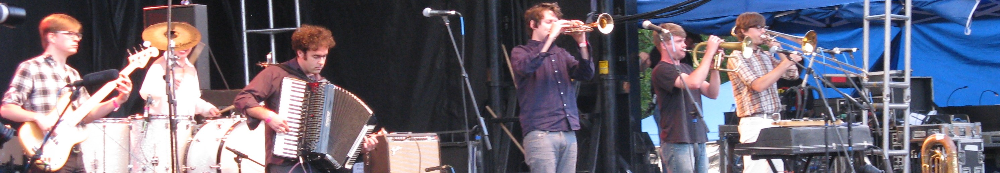{kind=link}
2000s Overview¶
This project includes albums from a span of 66 years, and over one quarter of them are from the 10 year span covered on this page. One of the interesting things about being born in the first year of a decade is that the phases of my life align with the decades in a very direct way. This is the music of my 20s, a time of great personal development, and the time when I connected with pop music most deeply. It was the rise of hip-hop and indie. It was a time when disruptive technologies changed the way music was made and sold. It was a time when the innovators started to break from the mainstream of pop music, but the internet still helped them find an audience. I’m glad that I got to be young, but not too young in such interesting times.
2000s Stats/Favorites¶
Section started: 5 Dec 2021
Section complete: 11 Nov 2022
Latest update: 13 Jan 2024
Total Albums: 264
Top Artists:
5 Albums (2) - The Fiery Furnaces, Deerhoof
4 Albums (4) - Muse, Of Montreal, Radiohead, Spoon
Favorite album:
Not only my favorite album of the 2000s, but my favorite record from the last 20+ years.
Third by Portishead

Favorite Song:
The heartbreaking…
“Casimir Pulaski Day” by Sufjan Stevens
…and what a stunning performance of it!
2000¶
The decades generally don’t break down into convenient, thematic chunks and this is such a case. Most of what was popular, and certainly what I like from 2000 was the work of artists that rose to prominence in the 90s. The next year, millennial indie would break, and dominate the popular consciousness and my list of favorites. What we have below is a grab bag of acts with roots in early 90s alternative, late 90s indie, and other trends of the past (With one new band that points forward to what was to come).
This year I was busy, having relocated to State College, PA to continue my education. I wasn’t paying as much attention to new music and it shows, with only five of the albums something I heard in the year of release. The music I was listening to at the time was either from decades gone by, or things from the current day that I really don’t care for anymore.
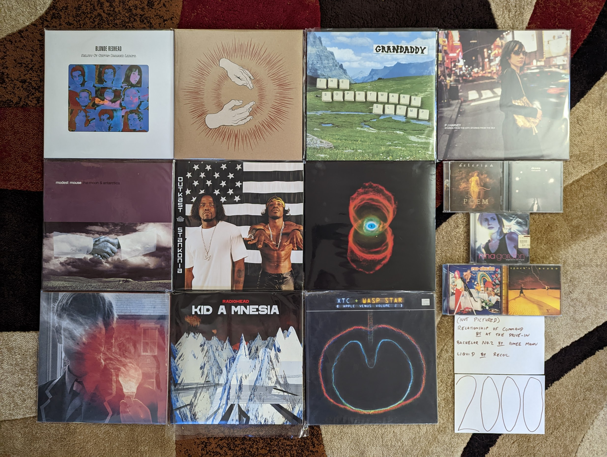{kind=link}
Relationship of Command by At the Drive-In - In general I don’t care much for post-hardcore and emo, but I like this. I think it is probably the connections to conventional hard rock, and a more pure kind of hardcore punk. I have to be in a certain mood, and this sounds great. [Memory: I didn’t hear this landmark album until I became interested in the related project The Mars Volta around 2005.]
Melody of Certain Damaged Lemons by Blonde Redhead - The earlier, noisier records have some appeal to me, but this album is where I really get on-board. The creepy, dreamy electronic sound with ethereal vocals is the formula that worked best for me. “This Is Not” is the perfect halfway point of their experimental tendencies and pop song skills. [Memory: This album really reminds me of my move to Rochester, NY as I was very into this around 2008/09.]
Poem by Delerium - This was a turn to a more mainstream sensibility, designed to capitalize on the newfound success of the prior two records. Electronic music was becoming a dominant force in the clubs and world music beats were still very much in vogue. There is an increased focus on collaborations with guest vocalists, and most of them work out very well. A particular highlight is “Innocente” featuring Leigh Nash of Sixpence and None the Richer. There are still some great atmospheric instrumental tracks to complement the vocal collabs. [Memory: The following year I would purchase my first MP3 player specifically to use on my runs. For some reason, this was one of the records I would put on my running playlists.]
Lost Souls by Doves - I prefer the following two records which were more in the UK indie mold, but this is a very good record as well. A very post-rock influenced effort, the songs are long and moody. Every now and then we get one of those little pop gems that would define their later work. [Memory: I heard this some years after their other releases. For some reason it wasn’t easy to find in the US until the late 2000s.]
Raise Your Skinny Fists Like Antennas to Heaven by Godspeed You! Black Emperor - [2000 FAVORITE] - Their finest work, and probably the best thing to come out of the much maligned genre of post-rock. This is heavy, gorgeous music that never stops being interesting. That somewhat not quite right, but completely beautiful interval played by the brass in the first moments of “Storm” gets me every time. I’ll never get tired of hearing the story of Murray Ostril describing his childhood visits to Coney Island on “Sleep”. One of the greatest albums of all time, and one the band would never quite match.
Tonight and the Rest of My Life by Nina Gordon - I’m not sure why we only got one really good record from this artist, because it is really, really good. Gordon has an great voice, and a rock sensibility that separates this music from the other woman singer songwriters in this area. I really wish we had gotten way more of this. [Memory: This makes me think about how different music discovery was back in the day. I heard the title track off of this on VH1 around the time of release. It really peaked my interest, but not enough to run out and spend my hard earned cash on the CD. It wasn’t until I saw a used copy at a Cash Converters two years later that I heard the whole and album and realized how much I like it. Today I would stream it on Spotify immediately.]
The Sophtware Slump by Grandaddy - Not a happy record. A haunting, psychedelic cycle of songs that feels like the overture to the pervasive negativity and malaise of the G.W. era. It manages to find some real beauty in the melancholy, but I have to be in the right mood for this. [Memory: 2008 was a difficult year in my life, and I remember connecting with this dreary record. I listened to it repeatedly working in the lab at my job at the time. I was semi-permanently living out of hotels in Rochester, and working all the time. This music made total sense in that context.]
Stories from the City, Stories from the Sea by PJ Harvey - For many years, I tended to dismiss this as a sellout for mainstream accessability. This is still Polly at her most mainstream, but it retains her best qualities as well. It is also the last record will will ever probably get with her trademark belting/growling vocal style. I now realize just because she threw in some stunning pop rock singles like “You Said Something” it doesn’t make this any less of a PJ Harvey record. [Memory: Showing how resistant I was to this record, it ended up being the very last of her records I bought on CD (Even after the very mediocre Uh Huh, Her).]
The Moon and Antarctica by Modest Mouse - In retrospect it is becoming clear that this is by far their best work. Wonderfully eccentric songwriting, and creative arrangements, they are firing on all cylinders. It never drifts into the sameness of their early records, and avoids the bland pop that would creep into the later records. One of the finest early indie records. [Memory: I bought the CD re-issue of this as a doorbuster sale at Best Buy black friday in 2004. What a different time, in so many ways.]
Bachelor No. 2: The Last Remains of the Dodo by Aimee Mann - Possibly the finest record in the “music you will hear at Starbucks genre”. Smartly written and produced folk leaning alt-rock. I love how her songs take unexpected turns into epic territory during the bridge or second chorus, and sometimes both like “How Am I Different”.
Return of Saturn by No Doubt - The intersection of the 90s ska sound that the band was famous for, and the early 2000s pop sound that frontwoman Gwen Stefani would help create. I like this way more than anything else by the band or the singer, and it is perhaps the last great 90s alt-rock record. [Memory: I had been resistant to this band until this record came out. Somehow it was the pop sweetness of “Simple Kind of Life” that would get me onboard.]
Stankonia by Outkast - These guys were always a breath of fresh air. In the 90s their joyful funky hip hop was the antidote we needed to soulless gangsta rappers, and the conscious hip hop here is just what was needed in the face of the bling era. I’m far from an expert in the genre, but this is my top rap record of all time. [Memory: I started watching MTV in 2000 after hearing the hip hop hits of the day at college parties at Penn State. That is where I heard these guys, and the songs “Mrs. Jackson” and the absolutely stellar “B.O.B” lead me to this record.]
Binaural by Pearl Jam - This is definitely the record where these guys started to sound older. The ballads were creeping in, and they were generally pretty great (e.g. “Light Years”). That said, after this point they would start to feel a bit self derivative. This in some ways is the last time we would get rockers like “Rival” that didn’t feel like a re-projection of past glory. [Memory: It took me a while to become a full-blown Pearl Jam fan, and I was only really fully on board when this record came out. At the time, this was probably my favorite album of the year.]
Lightbulb Sun by Porcupine Tree - It seemed like this was the year that all the 90s acts were becoming softer and more introspective. That included the kings of 90s prog. A very somber but beautiful record, and a big contrast of the prog metal that was coming next. [Memory: I would have loved to hear this record when it came out, but thanks to the slow distribution of their music in the states, I didn’t hear it until ordering UK imports on Amazon became a thing around 2006.]
Kid A by Radiohead - I like the actual songs here more than the meandering instrumentals, which haven’t aged very well. This layed the blueprint for a decade of layered electronic indie. [Memory: At the time I didn’t like this very much in comparison to the more rock forward sound of The Bends, but I have grown to appreciate it over time.]
Liquid by Recoil - A very strange electronic concept record. It doesn’t feel as sinister as it did at the time, and is admittedly a little comically over-dark in retrospect. Their use of slam poets for lyrics also makes this sound incredibly dated. There still are some interesting songs here like “Supreme”, “Jezebel”, and “Chrome”, even if the whole thing doesn’t work anymore. [Memory: A friend of mine at work loved this record and played it constantly, but I kinda hated it. After many listens I finally started to warm up to it. I never liked it enough to buy my own copy, and I only had the CD-R I burned from my friend for over a decade. I’ll still put it on from time to time, and I think how dated the whole thing is makes me nostalgic for a different time.]
V by Spock’s Beard - A very literal packaging of classic prog rock for the 21st century. I can almost picture these guys sitting down to make “Great Nothing” and saying “OK boys, its time to make our ‘Supper’s Ready’”. The whole thing has a kind of squeaky clean, Christian rock vibe to it that is both cringey and effective somehow. [Memory: I came across this during my deep dive exploration of prog rock circa 2003. This was by far the highest rated neo-prog album on RateYourMusic, and it deserves the good reviews.]
Wasp Star (Apple Venus Volume 2) by XTC - Few great bands have closed out their career this well. It is a solid set of straight-ahead songs that shows off how easy it was for these guys to make pop perfection. There is no bombast or orchestration here, and shows off the core of what made this band great for over two decades. [Memory: When I first got into XTC in 2004, this was the new record. It wasn’t yet clear that it would be the last one. I always hoped we would get more.]
2001¶
From here on out, since I am working backwards through time on this project, my favorite albums will be highly decoupled from the music I was listening to at the time. I guess I’ll have to consider each separately and note the limited overlap when it happens.
What we have below is a combination of 90s alternative holdovers, a few early 2000s indie classics, some atmospheric instrumental music, and an anime film soundtrack. I don’t know that I could have intentionally captured the spirit of the time better if I had designed a set of records to intentionally do so. This is often thought of as “the year the indie broke” and that is very much true. It is also very true that there were bands on both sides of the Atlantic that that were already very active and influential that would later get lumped into the indie scene as it progressed. While this was the year that the post-punk revival started, the roots for many of the threads that would make up the indie sound of the new millennium were already in place.
It is remarkable to think about how different music consumption was in the physical media era. This was the year that my music collection overflowed what I called “the first 400”. In the CD era there were a number of changer/cartridge based methods that provided access to more than a single album at once, and I invested in two huge, 200 CD carousel changers stacked up in my home hifi to provide me the ability to cycle though the entirety of my collection. Thanks to the salary afforded by my internship, and the bulk pricing of the BMG and Columbia House Music Clubs, it didn’t take long for me to outgrow the limits of this setup. It was also becoming increasingly inconvenient to shuttle discs back and forth to my State College apartment. When I returned home for a visit, on the evening I drove back to school I would pick out a new set of discs to bring back with me. I had a database of my collection and their positions in my CD changers that I would print out and use to pull discs and transfer to one of two huge leather bound CD wallets for transport.
The database I used to orchestrate CD pulls would go on to become a chronological account of the albums I acquired between the years of 2001 and the end of the CD era (c. 2011). I still have a version of this today as a Google Docs spreadsheet, and it was an invaluable resource in compiling the lists for this project. The “First 400” was not logged chronologically, but instead was sorted alphabetically into two bins of “classic rock” and “contemporary music”. It serves as a time capsule of the music of my youth. It also frustrated me that in the streaming era that I didn’t have the same kind of accounting of the music I was listening to. This was a primary inspiration for what I am doing here.
In 2001, I also bought by first MP3 player. A Nike branded product made by Diamond Media (remember those guys?) targeted at runners. I always dreamed of having my music collection with me on my runs, and this device finally made that a reality. I remember standing in Best Buy deciding between the Play 60 and the more expensive Play 120. I splurged on the higher capacity unit, because the 64 MB on offer (over 32 MB) would give me a chance of fitting a single album at the then standard 128 mbps encoding rate. Up to this point, MP3s were a way to sample music. This would be my gateway to encoding my physical collection as MP3s, and a migration to digital media as a primary means of consumption.
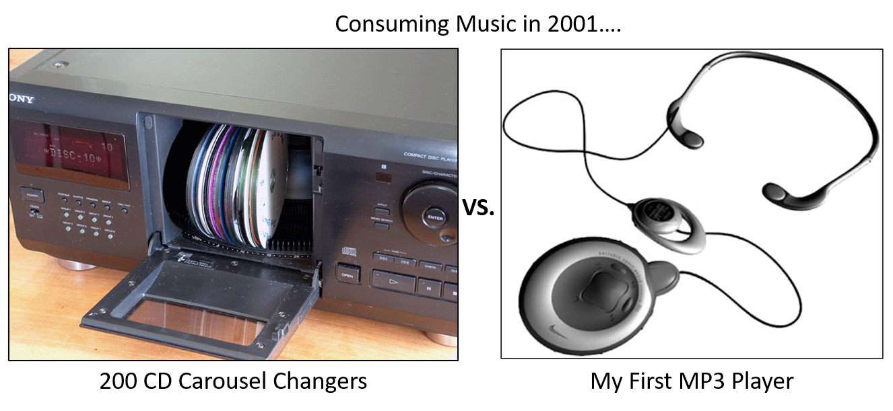{kind=link}
None of the records below were ever transferred via USB 1.0 proprietary connector into the 64 GB of flash memory on that Nike branded device. Nor do any have the honor of being in the “First 400” that lived inside those giant jukebox changers.
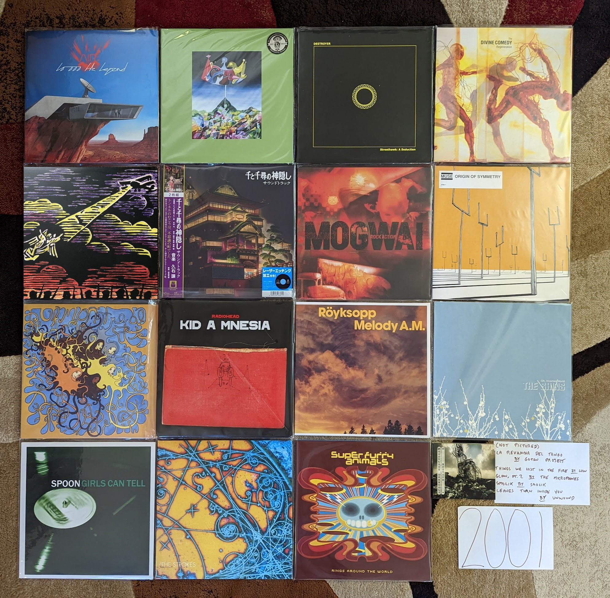{kind=link}
10,000 Hz Legend by Air - A fairly big change-up from what had come before. There is some of the chill lounge electronica we had come to know, but there now are vocals and more upbeat tracks. A very fuzzy and psychedelic sound that is an all around more difficult, but rewarding listen. [Memory: After I warmed up to their first record, I sought out downloads of the key singles off of this the latest record (using the services of the day). It made me curious to buy the full record from Columbia House, but I didn’t like it at first. These guys were an acquired taste for me apparently.]
Circulatory System by Circulatory System - It is a return back to the brighter, poppier sound of the first Olivia Tremor Control record. Not quite as consistent as the albums from that project, but still a solid bit of highly layered psychedelic low-fi. [Memory: My vinyl copy was bought after the successful Kickstarter campaign in 2019. What a time to collect obscure music.]
Streethawk: A Seduction by Destroyer - Probably my favorite of the New Pornographers side-project albums. He makes good use of his pop-folk skills without giving into the schmaltzy cheese that would typify his later works. A fine indie-pop record. [Memory: I discovered this during the eMusic era (c. 2006) when I would download a mess of records every month on review/reputation alone. In this case I at least knew I liked his main band.]
Regeneration by The Divine Comedy - A total outlier, and perhaps the weakest in his catalog. The best song here, “Perfect Lovesong” follows the standard conventions of the artist, but the rest are dominated by the participation of Radiohead’s producer. It is still an enjoyable record, but somewhat second tier. [Memory: Due to the reputation this was the last of his records I engaged with. In fact, I only really gave it a shot when the reissue series was released in 2020.]
The Earth is Not a Cold Dead Place by Explosions in the Sky - This debut is remembered as much for being release on September 11, 2001 as it was for its content. Like the other new records released that Tuesday, it wasn’t really paid much attention at first. Like everyone I came back to it after the huge success of its follow-up and the “Friday Night Lights” soundtrack. This is a moodier, heavier affair that is at least as good as the far more famous and celebrated work that came next. [Memory: These guys have a very consistent sound, and two records is all I need of this. I event get those two records mixed up. I put the wrong one in the picture above and had to photoshop it. Can you tell?]
Epitaph by Front Line Assembly - By the beginning of the 21st century these guys were now making straight up dance music. It was industrial goth dance music, but definitely made for the club. The ambient world music sounds of their side project Delerium were also starting to leak into their primary act. This has their absolute finest track in “Decoy” which almost feels like a summary of every great thing they had done to this point. [Memory: One of the first things I ever bought online was my CD copy of this that I got from Overstock.com for about 4 bucks.]
La Revancha Del Tango by Gotan Project - A really cool modernization of Tango music that adds samples and electronics. A very French kind of music that has supplied countless gynmasts with their floor exercise music. [Memory: This was given to me on a CD-R by a friend in 2002. I’ve enjoyed it for the last 20 years, but I had to lookup who the band even was to write this entry. ]
Spirited Away Soundtrack by Joe Hisaishi - A remarkable score for a remarkable film. The piano based introduction to the film “One Summer Day” does an amazing job setting the stage for this mysterious, imaginative fantasy film. The eerie soundtrack to the famous train journey, “The Sixth Station” is the definitive statement by the composer. The timeless art of Miyazaki and Hisaishi are forever linked. [Memory: I didn’t see any of the Miyazaki films until I was 40 years old. I felt like I missed out on so much never having seem the movies or heard this wonderful music as a young person.]
The Things We Lost in the Fire by Low - A somber record filled with gorgeous vocal harmonies. The depressing title sets the mood well for this highly affecting record. [Memory: I came in contact with these guys while doing a genre study of “slowcore” around 2006. While the genre mood fits in with that scene, the soaring vocal harmonies go somewhere else entirely.]
The Glow, Pt. 2 by The Microphones - A record that manages to be quiet in a very menacing way, with intermittent bursts of loud noise. “I am Bored” is one of my very favorite songs. [Memory: One of those albums that was highly ranked on RateYourMusic, that I could finally try out once I had eMusic buffet pricing.]
Rock Action by Mogwai - My favorite record by these guys is their most stylistically diverse. We have a lot of the guitar heavy crescendo rock they pay the bills with. We also have a stunning Welsh ballad “O I Sleep” and the orchestrated ambience of “Take Me Somewhere Nice”. [Memory: One of the first things I did when I got eMusic, was sample a bunch of the most famous post-rock albums. This was the first one I connected with.]
Origin of Symmetry by Muse [2001 Favorite] - Their second record is still their finest. The perfect mix of guitars and synths, and soaring falsetto vocals. So completely over the top, it manages to somehow avoid sounding ridiculous. Delightfully heavy music. [Memory: After connecting with their third record I sought out the much hyped album that had come before, but discovered that it was never released here. For a couple years I looked at import listings for the record online, but didn’t get my own copy until the proper WB release in 2005.]
Coquelicot Asleep in the Poppies… by Of Montreal - The last of the early lowfi psych records before this bedroom project became a full band. Loosely a concept record, but the real focus here is the quirky pop songs and layers upon layers of sound. Also the last record with the childlike whimsey before Kevin Barnes went in a much more adult territory. [Memory: This is one of the very first vinyl reissues I remember being very excited about, when it was released by Polyvinyl in early 2009.]
Amnesiac by Radiohead - One of my strongly held, unpopular opinions is that this is far better than the much loved Kid A. While the prior record at times became lost in meandering instrumentals, this one finds the perfect mix of songs and ambient interludes. Several of their greatest songs are here, particularly “Pyramid Song”, “You And Whose Army?”, and especially “Knives Out”. This might be my favorite of their records. [Memory: I listened to this on repeat while I assembled my first self-built PC in the fall of 2006.]
Melody A.M. by Royksopp - Somewhere between chill and dance electronic, these guys found a new sound. They would never make another record quite like their debut again, and this is probably still their finest statement. [Memory: I became aware of them when I bought a discount chill music box set at Best Buy that included the track “Eple”.]
Chutes Too Narrow by The Shins - Almost an indie cliche at this point, it is easy to forget what a wonderful collection of pop songs this is. By the next album all the rough edges would be gone. The two songs that this ends with “Pressed in a Book” and “The Past and Pending” is probably still the best moment from this guy. [Memory: I’m proud that I knew about this record before that dreadful Natalie Portman movie, if only just before. I still came on board via “New Slang” when I heard it on Sirius satellite radio in 2003.]
Smolik by Smolik - A semi-obscure Polish indie record that is equally influenced by folk and electronic music. This is the work of a veteran musician who had been around for a while when all of a sudden his music was very in fashion. I love the minimal wave intro, and picture the artist making the track behind the iron curtain in the late 80s. [Memory: A friend of mine came home from Poland with this disk, very excited about the burgeoning indie scene in his home nation. I think this album ended up resonating even more with me. I’ve listened to the CD-R copy I burned many times in the 20 years since.]
Girls Can Tell by Spoon - The album where they got their magic formula together. Percussive, minimalist indie rock that is more piano/keyboard focussed. A fantastic record, and the next three albums were a progressive climb from here. [Memory: “The Fitted Shirt” was a really amusing in retrospect because of the role hipsters would play in bringing back slim cut men’s fashion.]
Is this It by The Strokes - The Pet Sounds of the 2000s indie scene. These guys were always poppier than their post-punk revival contemporaries, but in retrospect this feels like a very bubblegum high-water mark for the genre. Feels less overrated now than it did back then, classic stuff. [Memory: Like many folks, this music got on my radar at the 2002 VMAs when all of a sudden there was a new kind of rock music with the likes of The Vines, The Hives, and The White Stripes, but these guys are the only band from that cohort who are still active and relevant.]
Rings Around the World by Super Furry Animals - For exactly one album they gathered up and made a fore measured, mature record. It still has the best elements of their classic neo-psychedelia, but now with strings and highly refined production values. I would have loved more work in this vein. [Memory: I always liked this record, but I didn’t really connect with it until the days of the 2020 pandemic. I guess I needed to be a bit older to fully understand this kind of music.]
Leaves Turn Inside You by Unwound - The kind of slow, atmospheric rock that gets lumped into the post-rock scene, even if that isn’t quite right. I have never totally been able to get into these guys, but this one is a classic. [Memory: I discovered this in the late 2010s when I heard a DJ play it on one of the local college radio stations late at night. That is exactly the kind of record this is.]
2002¶
This is another interesting inflection point in this project. I’m going through the years backwards as I write this, and I knew there would come a time where the majority of my favorites would be retroactive discoveries. It isn’t surprising that this happened in the last full year before paid downloads changed the way I consumed new music, and satellite radio accelerated my music discovery. At this point, I had mostly lost interest in mainstream rock and was only really hearing the latest music from artists that I had a pre-existing relationship with. The only major place I was hearing new music was online radio streams like Virgin Radio UK. Looking back on the collection of records below, this clearly was a landmark year for the burgeoning indie movement. A fair number of underground scenes were starting to break through, and there are some legendary records from the artists that would be the face of the movement on both sides of the Atlantic.
In 2002 I would move away from home town permanently. As an undergrad, I spent the summer months at home in Pennsylvania working full time at the company I was an intern for. At the end of the summer of 2002 I would move back to State College for grad school, and that would be my home for the next 6 years. My last year as an intern ended abruptly when I was layed off due to financial problems at the company. It was less than two weeks before my planned departure anyway, and I made good use of the extra time. At this point I owned just under 400 releases on CD, and with the time I had before returning to school, I burned the whole lot of them to MP3. Working in eight hour shifts, I used my PC to rip discs one at a time in the days when it took a good 10-15 minutes per disk. Working in 8+ hour shifts, 6 days a week I had a hard drive filled with my entire collection for the first time. Being able to listen to anything I owned in iTunes was a game changer, and I was rediscovering and re-evaluating music from my teenage years. I didn’t know it yet, but this was the beginning of the end for the CD, and the way that I had discovered and consumed music since I was very young.
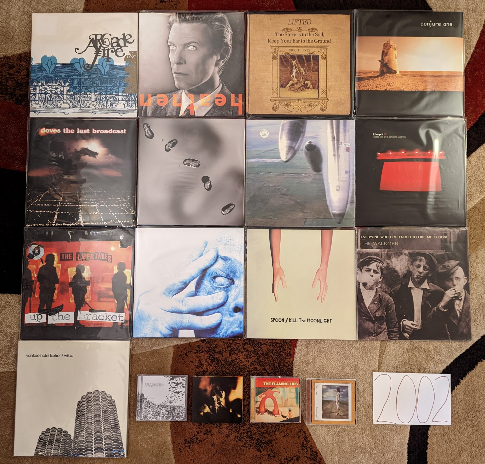{kind=link}
Arcade Fire by The Arcade Fire - These guys arrived fully formed. While it lacks some of the polish their debut LP would have, the spirit and songwriting is all here. A stellar EP. [Memory: I sought this out after buying and loving Funeral and it was exciting to know that this young band already had more material to enjoy.]
Scarlet’s Walk by Tori Amos - I saw this as a disappointing turn to adult contemporary when it was first released, but have come to enjoy it much more over time. This is a mellower, more accessible sound but the songwriting and performance is still top notch. Several of her very best songs are on this record, in particular the amazing closer “Gold Dust”. [Memory: The lead single “A Sort of Fairytale” was one of the first (perhaps the very first) free download of the week I remember from iTunes. Soon thereafter I remember seeing the creepy head on a foot video on VH1.]
Heathen by David Bowie - A much more successful attempt a the neo-classical sound that had started on Hours and the aborted Toy. Looking back, this is the start of the glorious last act to his career. A subtle and warm record, the sound of an innovator who is now content but still a restless creative. [Memory: I heard this for the first time streaming Virgin Radio at work in June of 2002. The last record got almost no attention in the USA, so this came out of nowhere feeling like his first album since Earthling.]
Lifted.. by Bright Eyes - Connor Oberst is one of those artists that has may albums that I kinda like, but only one that I love. I think the stylistic variety on this one separates it from all the other very indie folk heavy albums. The songwriting is just a little extra sharp and the production just a little raw in a way that doesn’t feel forced like some of the later albums. [Memory: It is funny to remember that I discovered this record by the way of hearing “Lover I Don’t Have to Love”, since that dark keyboard heavy track is not at all representative of the record, or this artist in general.]
Conjure One by Conjure One - Maybe the single best album that Rhys Fulber had been a part of came from this solo project. I really dig the world music fusion with a much harder edge than what we typically saw in this guy’s other work. “Manic Star” is also a fine electronic pop song. [Memory: I had only just recently discovered Delerium and Front Line Assembly and was bummed to hear that they were splitting up. The hiatus didn’t last long, and we got a great new project out of it.]
The Last Broadcast by Doves - The perfect balance of their early post-rock influenced sound, and the later straight ahead indie-rock. This is excellently produced, layered rock music with delicate pleasant vocals. The intricate “There Goes the Fear” is one of my all-time favorite songs. [Memory: It is hard to listen to this record and not remember the apartment I shared with two other students in my grad school days. I listened to this a ton in those days.]
Yoshimi Battles the Pink Robots by The Flaming Lips - In general I have lost interest in these guys, as their eccentric psych-pop hasn’t aged too well. That said this loose concept record is still something that I am happy to put on every couple years. [Memory: I always remember these guys as the first of many Pitchfork festival headliners that I was too tired to stay for (2009).]
Up by Peter Gabriel - All of a sudden there was a new album by this guy, and it sounded shockingly contemporary. The aggressive, industrial sounds of “Darkness” still managed to also have that magical Gabriel atmosphere. What he gives up in frequency he more than makes up for with consistency. [Memory: When writing this 20 years later, I realized for the first time the artist’s face is visible on the cover in the background.]
Yanqui U.X.O. by Godspeed You! Black Emperor - The heaviest record by a very heavy post-rock band. The thick guitar noise regularly washes out the layered string instruments. “Rockets Fall on Rocket Falls” is their very best. [Memory: I don’t know that I have jammed any song more often on headphones than “Rockets Fall on Rocket Falls”.]
Turn on the Bright Lights by Interpol - Their classic debut still hits hard two decades later. A landmark in the post punk revival, this also gives an indication of the depth they would show in later records. [Memory: I bought this record on a whim when I saw it on sale at Best Buy. I remembered hearing about them as the next big thing, and had heard their sound compared to Joy Division who I was starting to become very interested in. This is probably my gateway into indie.]
Up the Bracket by The Libertines - Much like the US, the early days of 2000s UK indie was dominated by rough around the edges revivalists. These guys feel like a more addled Clash. They would never come close to the quality of this shambolic debut again. [Memory: This was one of my favorite running records in the early-mid 2000s, and I turned many laps at the Penn State IM building listening to to this.]
Riot Act by Pearl Jam - Their transition to mid-tempo aging alt rockers was complete. They held it together for one last excellent album before becoming very boring. Filled with high quality ballads like “Love Boat Captain”. [Memory: I saw them on this tour in State College, PA and I’m glad I had the opportunity to see them before their over the hill days.]
In Absentia by Porcupine Tree - At the time this felt like a very heavy metal sound. The Steven Wilson solo records have in many ways made this sound far milder. That said, it is a great semi-prog alt rock record and another interesting reinvention for this band. [Memory: I had just started to listen to them, when they seemed to disappear for a while. After a label change they became a much bigger thing in the US, such that I was even able to buy this from Columbia House Music Club.]
Kill the Moonlight by Spoon - Another solid record that feels like a companion piece to Girls Can Tell. [Memory: I bought this new on vinyl at Amoeba records for 12 bucks in 2009. Many I miss those days.]
Everyone Who Pretended to Like Me is Gone by The Walkmen [2002 Favorite] - By far their most experimental record was their first. There are so many off-kilter rhythmic, structural, and instrumental elements here. Hamilton Leithouser was bringing it as a belting vocalist from the first track. Still a super interesting listen today, especially the eccentric career highlights “Wake Up” and “Rue the Day”. [Memory: Like many people, I first heard of these guys when the song “We’ve Been Had” was used in a long running Saturn Ion commercial.]
Out of the Fierce Parade by The Velvet Teen - They have made quite a bit of music since, but their first statement remains the best. Some really enjoyable light alternative rock with soaring vocals. [Memory: In the early days of Sirius radio, the DJs would get a single free pick of their own per shift. One of them almost always used this selection on “The Prize Fighter”. Why not? It is an amazing track.]
Yankee, Hotel, Foxtrot by Wilco - Not as revolutionary or experimental as it felt back then, but they add enough new elements to their country tinged sound to make things quite a bit more interesting. It was a time of great interest in “shortwave radio stations” and this is probably the most famous reference to them. A pretty great collection of songs, from the folky “Jesus, Etc.” to the power-pop of “Heavy Metal Drummer”. [Memory: I dropped the record brush on my vinyl copy while dry cleaning. It will always have a few pops and cracks on “Poor Places” as a result.]
2003¶
Looking at the image below, I see a time that when I think about it seems so long ago, but somehow also feels like only yesterday. This applies from both a music/technology standpoint, and my personal life. I remember it simultaneously like the beginning of the age I still live in, and the fragments of a very different time.
In 2003 two major changes had come to how I consume music that in some form persist today. First, I would download the first commercially released digital music files that would enter my collection. Like almost anyone my age I had used applications like Napster, KaZaa, WinMX, and Limewire to download music since the late 90s, but the labels were finally starting to realize they should start selling the product that young consumers clearly wanted. Interestingly, it was the McDonald’s Monopoly game that would lead me to Apple’s nascent iTunes music store. In the Summer of 2003, the game pieces had a new feature in the form of a second chance code printed on every game piece. This code could be used to play an online game for a range of prizes. I forget the details, but somehow I had worked out the patterns where I was able to receive on nearly every play either: a free Snapfish digital print (I won hundreds, and still have some to this day) or a free iTunes download. My total winnings were several dozen downloads that I would spend on the latest indie hits or back catalog tracks on the store. I was a poor grad student living in Cleveland for the summer while I worked at NASA and Micky Ds made a great cheap meal. There were also lots of other folks around me who weren’t exploiting the game that I could get extra game pieces from. What started humbly, would soon be the primary way me and pretty much everyone else would acquire music.
The second big change was the introduction of both Sirius and XM satellite radio. Both services had a soft launch the year before, but 2003 was the start of the national push. It would be the first major challenge to legacy, commercial terrestrial radio, and would start a transition that internet radio and the streaming services would later complete. Shoutcast and other early internet streaming platforms had introduced me to the idea of expanded and niche radio playlists, but satellite made this technology professional and put it in my car. In the summer of 2003, during a visit back to State College on the weekend break from my responsibilities at NASA, I bought a Sirius plug-and-play radio at Best Buy. This unit had docking stations that allowed me to listen either in my vehicle or hooked up to a home stereo. I would quickly discover the stations Sirius Alt Nation and The Vault. These would expose me to the latest modern rock hits and semi-obscure classic rock respectively. While I was yet to discover the Sirius indie channel (Left of Center) there was extensive playlist crossover, and I was getting dialed into the exciting new developments on independent labels of the USA, UK, and Canada. What I was hearing an loving on Sirius was becoming what I spent those harvested iTunes downloads on. The pipeline of curated, genre programming was motivating digital consumption of new releases. This system largely persists today, though it is more likely Pandora or Spotify radio leading to streams on Spotify, Apple Music or YouTube.
This was both the beginning of my independent adulthood, and a time that I can barely relate to anymore. I was still in school, but I now had a grad student position that could cover all of my expenses. For part of the year, I was living in Cleveland, which felt like an exotic far away place, and was the most distant place from my hometown I had ever spent a significant amount of time. My newly found financial independence and distance gave me the confidence to take a major step. Late in 2022, I finally let my family know I wanted nothing to do with the cult I was raised in. 2003 was the year when I started to work out what the future was going to be like. In a way, I was starting over as a young adult. It was a confusing time where I had to find meaning and stability outside of the harmful organization and limitations I had known before. It was scary and overwhelming, but more than anything it was incredibly exciting. A massive weight had been taken off of my shoulders, and I didn’t know what I was going to do next. However, I knew for the first time in my life, right or wrong, it would be what I wanted to do.
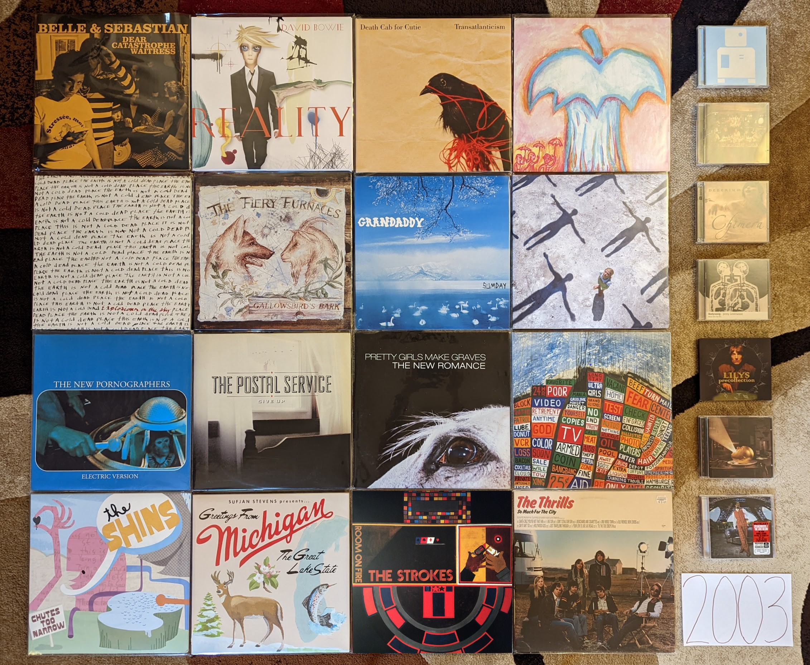{kind=link}
These Are the Vistas by The Bad Plus - I bin the work of these guys into two groups, my favorite album (Suspcious Activity?) that was unique and superior, and the rest. This is the best of the rest. We have the usual mix of mostly rock covers, and a few originals. The improvisation is fairly out there, but the familiar pop tunes ground the whole thing. The other records in the “rest bit” are just like this, just not as good. [Memory: This was the first record I went out and bought after hearing them on XM Beyond Jazz in 2006. It was good enough that I went out to get the rest, but with the noted exception of Suspicious Activity? this would never be topped.]
Dear Catastrophe Waitress by Bell and Sebastian - At the time, this was a very controversial record. The more polished pop sound offended the fans of the earlier chamber folk focussed records. In retrospect, it doesn’t feel as radical as it was perceived at the time. Yes there is more production here, and the songwriting feels a bit more ambitious, but this was more of a gradual shift than it was taken to be at the time. In many ways, this is the last record by the old version of the band with a few new elements that would point to their future form. [Memory: This was my point of entry to this band, and probably indie pop in general. I remember hearing “Stay Loose” playing on Sirius Alt Nation while cooking out on the back deck of my grad school apartment. That song (which I loved) was not representative of the album or the band in general, but when I did get the album I really liked it as well. I would gradually become a fan of pretty much their entire back catalog.]
Reality by David Bowie - The third, and probably best of the neo-classical Bowie records. A reflective period where the artist was making new music that was inspired by, but only tangentially related to his classic 70s records. A really perfect latter career record, and “Never Get Old” is one of his very finest songs of all. [Memory: At the time I assumed that he would go on forever making excellent records like this every few years, and touring regularly. This would be his last record for more than a decade, and his last tour ever.]
Long Gone Before Daylight by The Cardigans - What happened to these guys? They were such a happy pop band, but now they are making sad country-esque songs. The singer even went from blonde to full black hair goth. It works pretty well though. A really enjoyable, if a subdued and somewhat downtrodden record. [Memory: I remember listening to this frequently during my early days in my first job. I apparently didn’t buy this until it had been out for a few years.]
Transatlanticism by Death Cab for Cutie - I’ve always wondered how much of the breakout success of this record was due to the massive success of the Postal Service record right before this. That said, Ben Gibbard’s primary band hit the bit time after this one. This was their last records as an indie rock artist, as the majors and the arenas would be waiting. This still stands as their finest work, and the lack of perfect polish adds a charm missing in their later work. [Memory: I don’t know that any song is more 2003 than “Title and Registration.” When I hear all about that glove compartment I’m taken back to the world of my 23 year-old self.]
Apple O’ by Deerhoof - Their early albums are interesting, but a little too rough around the edges to be totally listenable. They got things together here, and while this still has a serious edge, it always centers itself in a way that make it digestible. Lots of wild drumming, heavy guitars, and cutesy weirdness. This is the formula that would make for their strongest stretch of records. [Memory: My vinyl copy of this was a record store day exclusive. I miss when RSD was more about the kind of small label artists that need those kinds of special releases.]
Chimera by Delerium - This is where they started adding more light pop elements, and the remaining ambient industrial elements faded a bit. There is still enough of their classic period sound here for me to really dig the record, but I haven’t connected with anything since. It is interesting how Kristy Thirsk finishes out the album with the excellent “Returning”. She started their classic period with “Flowers Become Screens” on Semantic Spaces, and has book-ended their most successful era. [Memory: I had totally forgotten about this record and it was one of my big rediscoveries while doing the prep work for this list.]
The Earth Is Not a Cold Dead Place by Explosions in the Sky - Post-rock has fallen out of favor in recent years, and it can be hard to remember this was once considered one of the finest records of the decade. It still is one of the greatest works in that much maligned genre, and instrumental music that manages to be more than a background. It will always be most famous as the backdrop to Friday Night Lights, but it is very easy to enjoy all on its own. [Memory: In 2006 I downloaded many of the key post-rock releases from eMusic. This was one of the first I checked out, as much for its reputation as for it being 6 tracks long, and eMusic was billing me by the song.]
Gallowsbird’s Bark by The Fiery Furnaces - Most of what made them great is already on display in this debut. The unpredictable, inventive instrumentation and structure along with the highly unusual style of performance unique to this duo. The songwriting is a little raw and not up to the standards of the next few releases. I don’t listen to this often, but there are a couple great songs here, and a whole lot of potential. [Memory: I actually didn’t like this record that much, but my completionist tendency led me to add it to my otherwise complete vinyl catalog of the band. After a few listens on the big black disc, my opinion became more favorable. The same did not happen with Rehearsing My Choir.]
Sumday by Grandaddy - The middle record in the outstanding trilogy of releases that closed this band’s original career is the most subtle of the bunch. This is much more like their early releases, mostly comprised of upbeat little pop songs accented by electronics. It ends with a moody cluster of three tracks which would have fit right in on the prior record, including the superb closer “The Final Push to the Sum”. [Memory: I found out about this record trading music with a friend. I loaned her The Thrills debut, as a California resident I was curious about her opinion of their homage. She responded by sharing more authentically California sounds.]
Bodysong by Jonny Greenwood - So many folks with a music degree are very jealous of the attention Radiohead’s guitarist gets for his “Classical” style movie scores. This first score proves that the attention was warranted, from the beginning. A tremendously interesting soundscape that does the screechy violin style contemporary classical better than lots of folks who go to school for years to make it. [Memory: Sirius Alt Nation used to play some pretty out there stuff in the early days. That is where I found out about this release. I didn’t even realize who the artist was until after I tracked down the somewhat obscure CD.]
Precollection by Lillys - An interesting combination of their preceding Kinks inspired sounds, and 80s psych acts like Echo and the Bunnymen and The Church. In other words designed for me to like. [Memory: I heard their newest songs on Sirius in 2005, and later found this on discount at Mike’s Movies and Music. After picking this up, I had to checkout there entire diverse catalog. I remember having to import some of the more obscure EPs from the UK, for a higher sum than I would typically pay for a CD.]
Deloused in the Comatorium by The Mars Volta - Progressive metal was quite a departure for these guys after the post-hardcore of At The Drive In but it works out great here, and many albums that followed. Almost like a punk based Rush. [Memory: One of those albums I saw for years on the rateyourmusic top lists. That Pink Floyd like cover is an attention getter. Once I finally gave it it try, I was happy with the content as well.]
Absolution by Muse [2003 Favorite] - This was the album tha finally got some attention in the USA, and it is easy to see why. This downplays the progressive elements of the last record a bit, and provides something that is a bit more straight ahead hard rock. This was the perfect thing for all the folks who listened to 90s alt-rock, but who weren’t digging all the post-grunge of the day. [Memory: Another Satellite radio discovery. For some reason Sirius ALt Nation picked up on this almost a year after it was first released.]
Electric Version by The New Pornographers - From a pure pop song standpoint, this is their finest moment. A tremendous collection of simple, hook laden tunes that do a lot with the same few elements. They had to get a bit more complicated from here on out to keep things interesting, but there is a real appeal to the simple treats on offer here. [Memory: “From Blown Speakers” has to be one of the songs that I have listened to the most in my life. How many hundreds of times have I listened to that 2:49 of pop perfection?]
Speakerboxxx/The Love Below by Outkast - At times I have wondered if this album happened organically or if at some point a decision was made to produce a sprawling, divergent double album designed to signal the creative parting of the ways. Perhaps a bit of both. Regardless, what we have here is a very diverse collection of genres and styles, and the majority are done quite well. At this point it is mostly known as the record that produced the all-time hit single of “Hey Ya!”, but there is a lot more here to like, from the wildly creatively and very funky southern hip hop of “The Rooster” to the genre bending psychedelic R & B of “Roses” that almost seems to anticipate future artists like Janelle Monae. [Memory: I bought this record at Circuit City the day it came out, and the second I heard “Hey Ya!” I knew it was going to be a massive hit. Everyone would soon know who Outkast were, but only a few short years later, they were gone.]
Give Up by The Postal Service - A massively influential record that spawned dozens of imitation indie-electronic pop acts, most of which were terrible. Somehow the brightness and earnestness does not become grating here, and what would soon sound tired, is still innovative. It is probably good that this project never spawned a second record, as that might have been bad as well. What is recorded here though is almost universally brilliant. [Memory: This record had a really slow rise to prominence. It came out in January of 2003, and I didn’t hear anything of it until I caught “Such Great Heights” on Sirius Alt Nation in the summer of that year. I was still early. It wasn’t until the song appeared in several commercials in 2004 and the movie Garden State (yuck!) happened, that this became the indie landmark we think of today.]
The New Romance by Pretty Girls Make Graves - An outstanding anomaly of the post-punk revival that dabbles in new wave and pop-punk songs. It actually sounds a bit like music that would be very popular only a few short years later. It is a shame that this band has become so obscure over time, this really holds up well. [Memory Another discovery on Sirius Alt Nation in my early days listening to satellite radio. I bought a download of “Something Bigger, Something Brighter” but it would take me several years to finally get the record. While that is still my favorite song, This is a solid album throughout.]
Hail to the Thief by Radiohead - A less consistent record than what came before, but the highs are very high. “2 + 2 = 5” is an especially great song, and the last big rocker these guys would ever make. This is where the sleepy mid-tempo tunes started to appear in large numbers, and they aren’t all as interesting as the classic “There, There”. [Memory: For some reason I downloaded the song “There, There” years before I ever heard this record. It was one of the first Radiohead songs I was really into, and kind of a strange point of entry. Maybe it was the recent single of that time?]
Chutes Too Narrow by The Shins - A very similar sound to their first record, but not quite as good. That said another very pleasing power pop record. [Memory: “So Says I” was the first track I heard from these guys, but when I went out to find the album I had to settle for the first record, since it was all I could find at Circuit City that day. I eventually found this record at Tower Records in King of Prussia. It is hard to remember the days when looking for music was a struggle.]
Michigan by Sufjan Stevens - A much smaller, humbler folk record than the second (and final) state album Illinois. Some very pretty, somber music. Listening to this now, this sounds more like the best record from his early period, and less like the start of the golden middle career. [Memory: Every once in a while I will file away a long held memory, about a fairly minor event in my life with an accompanying soundtrack. In 2005 I moved out of my last college apartment, and got a place of my own. There would no longer be bus service regularly to campus. Somehow this finally felt like adulthood. I rode the North Artherton bus into central campus to visit the engineering library one last time and the instrumental track “Redford” played giving this moment a far more profound atmosphere than it probably deserved.]
Room On Fire by The Strokes - The sweet spot of this band for me. It still has the edgy post-punk sound of their first record, but with more of the poppy-ness that would dominate the later releases. The Albert Hammond Jr. penned song “Automatic Stop” is my favorite song of theirs. [Memory: This was the very first thing I discovered on Sirius Satellite radio in 2003. It was my gateway to 2000s indie.]
So Much for the City by The Thrills - A bunch of sunny pop songs about California by a bunch of people from Scotland. A unique concept for a record that works out surprisingly well. Both an early specimen of 2000s indie-pop and somewhat of a musical anomaly with little to compare it to. [Memory: After hearing “One Horse Town” on Sirius Alt Nation I went to the local indie record store City Lights for the first time to look for a copy. I remember going to the counter and the owner telling me he was happy to sell “a nice record for a nice price.” He would sell me many records in the years ahead.]
2004¶
This was the year that indie broke into the public consciousness, thanks to a string of key records that had come out that year, and the previous. Admittedly I had been progressively starting to listen to this kind of music without totally realizing it. Today it is easy to draw a line between the kind of alt rock that grew out of the late 90s and the indie rock that would dominate the next decade. At the time things were less clear. It was especially confusing for me, since I was discovering a lot of new things on the nascent Sirius Satellite radio. Sirius had two stations I listened to regularly: one called Alt Nation (ostensibly the music that grew out of 90s alt rock) and Left of Center (ostensibly music of the past and current day released on independent labels). The truth was more complicated, with quite a bit of overlap between the two stations and progressively, Left of Center became more about the indie aesthetic, instead of any sort of statement about how the music was produced. My tastes started to lean heavily towards these indie sounds, and I felt like a music connoisseur. Little did I know that millions of others my age were doing the very same thing at the same time. Indie would also be distinct from the mainstream pop of the same era, but it was a significant cultural and commercial force.
This was probably the most difficult year of my life. My time in grad school came to an unexpected end, and I found myself suddenly looking for my first real job. My first significant relationship had ended and my interactions with my family continued to be strained as a result of my leaving the extreme religion that they belonged to. Despite all that, there was also a strong feeling of potential under all the struggle. I graduated with my Masters degree, and thanks to an research assistantship, had no debt. While I felt a bit alone and somewhat estranged from my family, I also felt free to make my own decisions in a way that I never had before. Life was hard, but still very exciting. When I look at the albums below, I remember the struggle and hope for the future. This where I started building the good life I have today.
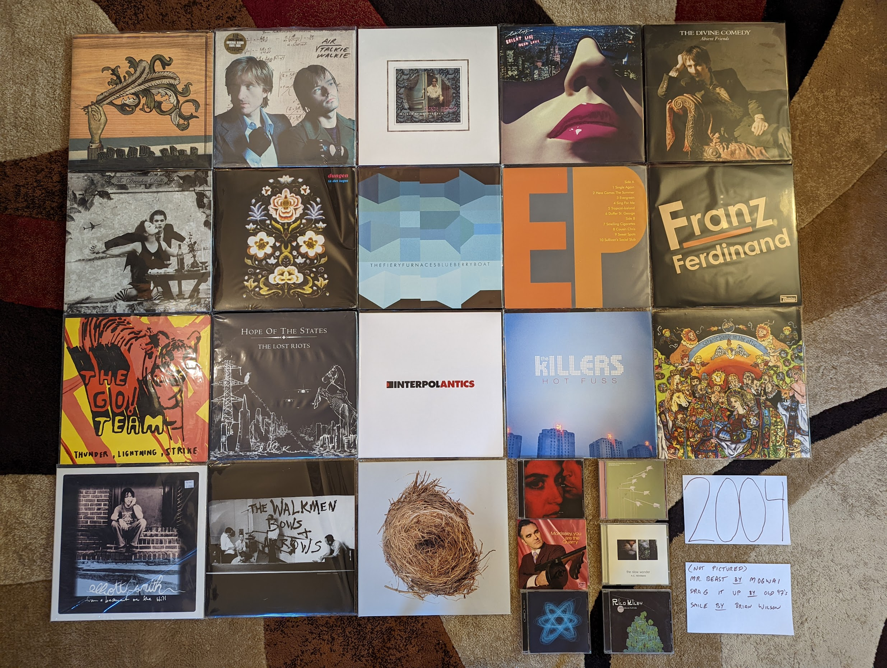{kind=link}
Funeral by The Arcade Fire - Besides the Postal Service record that had come out the year before, no other record was more influential in the “mainstreaming of indie” than this one. Still a stunning record today, only Canadian bands can be this over the top and not seem ridiculous. This music feels simultaneously designed for youth to dance in music festival fields, and to sell various products through television commercials and movie trailers. [Memory: I became aware of “Neighborhood #1” when it was the iTunes free download of the week in fall of 2004. I loved it, but I was so broke at the time I wouldn’t even consider getting the whole record. Shortly thereafter I heard “Neighborhood #3” playing in the background at Darkhorse Tavern in State College, PA. I remember dedicating some of my limited funds to buy a copy at Circuit City, one of the last CDs I bought before getting a job in early 2005.]
Talkie Walkie by Air - Their most “poppy” record, with nearly every track a somewhat conventional song. Those chill electronic sounds accented with guitars and wind instruments are still there, but now with chill abstract lyrics. I have a strong personal attachment to Moon Safari, but this is probably their objectively best record with the widest appeal. [Memory: I can’t hear this record without thinking of Cleveland Ohio. This ended up becoming the soundtrack to my second summer working at the NASA Glenn Research Center. Many mornings on my drive into the research center I was listening to this on my CD discman connecting to my car stereo via a cassette adapter. This was the first time that I remember finding one of my favorite semi-obscure bands playing on satellite radio. I remember hearing “Cherry Blossom Girl” and “Surfing on a Rocket” playing though the portable receiver unit suction cup mounted to my dash.]
Misery is a Butterfly by Blonde Redhead - The albums from the first half their career all have a fairly similar sound. This is where they stared to pivot to full on dream pop. It suits them well, and this and the next one captures them in top form, before they went overboard on the pop. [Memory: This was a retrospective discovery. After loving 23 I was able to explore the whole back catalog thanks to eMusic.]
Bright Like Neon Love by Cut Copy - This album sounds both incredibly derivative of classic synthpop bands (especially New Order), and completely ahead of the trends. In only a few short years, the “imagined 80s” era of indie music would commence, and this is possibly the first notable record in that trend. [Memory: I only listened to this record after knowing and loving the two that came after. In fact I heard this for the first time after buying the vinyl reissue at Record Store Day 2013.]
Absent Friends by The Divine Comedy - I have a hard time picking a favorite from this guy, but this is the most likely answer for me. Fits in well with the indie chamber pop of the time, only at a much higher level. Less humor than what came before (and in the most recent records), but plenty of wit and obscure references. The sound of an artist getting older, but no less interesting or relevant. [Memory: This record will always be linked with the fantastic live performance video that captured one of the largest and most interesting configurations of his band.]
The Dresden Dolls by The Dresden Dolls - A really unique idea that worked out for exactly one album and a song. Surely the only piano punk duo to make it to the big time never equaled their self titled debut as a band or in their solo work. There is actually quite a bit of range here: the straight ahead pop punk of “Gravity”, the quirky vaudeville of “Coin-Operated Boy”, and the sweet old time torch singing of “Jeep Song”. [Memory: I think this is the song that led me from Sirius Alt Nation to Left of Center. The same person programmed both channels at the time, and there was a clear intent to bridge between the two. In many ways this is the perfect music to make the journey from 90s alt rock to the best part of 2000s indie.]
Ta det lungnt by Dungen - An often blistering, often quite sweet psychedelic rock record where I understand none of the lyrics and don’t care. Still my favorite of theirs. [Memory: Looking back, I must have discovered 75% of the music I was listening to on Sirius. I can still remember hearing this for the first time while brewing beer in the kitchen of my new apartment and looking at the display to get the band info so I could acquire the disc.]
Let it Die by Feist - Before her iPod commercial, Lesley Feist was just another indie folk-popper, although a quite brilliant one. This kind of electronics accented chamber folk was about to become all the rage, and few albums have done it quite as well as this one. The DIY whimsey of “Mushaboom“‘s sound and video would spawn a myriad of imitators, but no one (especially not Zooey Deschanel) could quite pull it off the same way. [Memory: I heard “Mushaboom” for the first time on a Music Choice TV channel, even before satellite radio picked it up.]
Blueberry Boat by Fiery Furnaces - Just as wild sounding now as it was back then. This was definitely their attempt at a new kind of progressive rock. Epic art rock telling nonsensical stories about blueberry captains going down with their ship and eating tacos for lunch. This works better than it seems like it should, and has aged better than anyone could have imagined. [Memory: It is wild to think this used to be in the top 5 of the RateYourMusic chart for 2005. That is how I found out about it. For some reason some of the more extreme forms of indie have not kept their status, and this is now outside the top 200.]
EP by Fiery Furnaces - The shorter more conventional pop songs that didn’t fit conceptually or space-wise on Blueberry Boat, many of these are their most enduring tunes like the whimsical “Tropical-Iceland” and the sugary sweet “Here Comes the Summer”. One of my favorite indie-pop records from a band that typically is making much more challenging music.
Franz Ferdinand by Franz Ferdinand - The first post punk revival band to realize the indie kids wanted to dance. A massively influential record in retrospect, and just as enjoyable today as the day it was released. I recently heard this described as classic rock, and while that feels a little weird, it is absolutely true. [Memory: I heard “Take Me Out” streaming Virgin radio in my grad student office. I was often listening to UK radio at the time, since their indie scene was peaking. I wrote an E-mail to Sirius Satellite radio to request the current US Single “Darts of Pleasure”. They played it, but I remember the DJ kind of making fun of it. I was right!]
Thunder, Lightning, Strike by The Go! Team [2004 Favorite] - For a moment, it looked like there was going to be some sort of huge new genre that involved hyperactive, rapid fire samples. This kind of post-modern pop didn’t end up being that big of a deal, but it did produce this brilliant record. Interestingly, there are two different versions of this album. While I do miss some of the original samples featured in the 2004 UK release, I prefer the expanded version that came out the following year in the US. [Memory: I hated this at first. The samples seemed so garish to me when this started getting big plays on Sirius Left of Center in late 2004. For whatever reason it was the amateurish, childlike “Hold Yr Terror Close” that would get me on board when the “legal” version of the record was released in the fall of 2005.]
The Lost Riots by Hope of the States - I really wish there were more bands that took the basic ideas of post-rock to make more conventional song based albums. This seems like an obvious idea, but this record is one of the few examples where this is done well. The opener, “The Black Amnesias”, isn’t very far from the likes of Explosions in the Sky or Godspeed You! Black Emperor, but then we diverge into the post-Britpop of Muse or Doves. A really pretty hard rock album [Memory: My lack of funds in 2004 meant that many of the things I would hear and enjoy on satellite radio would not enter my collection. There were a list of tracks I had saved in the memory of my plug and play radio that I wouldn’t explore further until many years later. “The Red The White The Black the Blue” was one of my favorites on Alt Nation back in the summer of 2004, but I wouldn’t get the CD until sometime in the year 2007. It immediately became a favorite, and I was left to wonder why they didn’t become a bigger thing.]
Antics by Interpol - A bit of a lighter mood on this one, with what could almost be described as a pop sound at times. It suits them well, and this is my favorite record by these guys. “Evil” is an amazing song and is a perfect way to summarize this highly successful change of direction. [Memory: I think if I would have picked a favorite record at the time, it would have been this one. Listening to this today makes me feel very nostalgic for what was a very difficult time in my life.]
Hot Fuss by The Killers - The birth of “indie” bands debuting on major labels, but what an outstanding way to start. This is generally seen at the genesis of UK “landfill indie”, despite being the work of a US band. Without question, this sound would be very overused and tired only a year later but it feels fresh and compelling here. [Memory: This was one of only two albums I bought during my days of limited financial means between grad school and my first job. I like “Jenny Was a Friend of Mine” that much. The other was The Bends by Radiohead, with both coming from the Columbia House Record Club.]
Good News for People Who Love Bad News by Modest Mouse - My favorite “sellout record”. This is widely perceived as a difficult indie darling changing their sound to appeal to the masses. I prefer to see it as a difficult indie darling finding a way to turn their sound into a platinum seller. When I heard “Float On” for the first time I knew it was going to be a monster hit. [Memory: I remember having an argument about the merits of this album with a hardcore fan who gave me a drive home from a party in 2004. That argument has repeated at least a half a dozen times since.]
You Are the Quarry by Morrissey - All of a sudden Moz was an indie artist again, and was making fantastic music. It seems likely that this will stand as his last classic record, and his last moment in the popular consciousness for his music and not his sour personality. [Memory: Shortly before this release I had starting listening to the artist and his band The Smiths. In those days, the first thing you heard in the Rock and Roll Hall of Fame was “How Soon is Now” in the intro video to the museum. After my initial dive into the back catalog I started hearing “Irish Blood, English Heart” on satellite radio, and was excited that the man was still making great music. Shortly after “First of the Gang to Die” would be an even bigger indie hit, and I would run out to the local Best Buy to grab this one.]
Mr. Beast by Mogwai - Admittedly, these guys tend to make music that sounds pretty much the same. The albums that have become my favorites tend to be the ones that hit a little different. On this record, the piano comes to the front in a way that builds interest in a way that the more guitar focussed albums do not. “Auto Rock” is probably my favorite song by the band. [Memory: This was the new album by the band, at the time that I was exploring their back catalog. Even at that time it was very apparent to me, how much this still sounded like what they were doing in the late 90s.]
The Slow Wonder by A.C. Newman - His solo material tends to sound exactly like The New Pornographers without all the harmony vocals. This record ended up getting some of his best material from an era that would produce two of the finest records from that band. This is one of the greatest power-pop records ever made. [Memory: This is the first album I discovered via the nascent Pandora platform in late 2005. I heard the outstanding “On the Table” there, and it not only led me to this fine record, but to one of my favorite bands for the next few years.]
Satanic Panic in the Attic by Of Montreal - This album was my point of entry to what would become one of my favorite artists over the next decade. In retrospect, this mid period work is the perfect fusion of the early Beach Boys inspired psychedelic pop and the funky electronica that would come later. At the time, Kevin Barnes changes seemed sudden and jarring, but looking back a conceptual unity has come into focus. [Memory: I learned about this band when a song from the next record, “I Was Never Young” was used in a modified form for a commercial. As was my custom in the day, I used the AllMusicGuide to identify and obtain their highest rated record, which turned out to be this one. It was the perfect point of entry that led me to not only this fine artist, but the related Elephant6 collective that would dominate my listening for almost the next decade.]
Drag it Up by Old 97’s - A really appealing combination of old time country tinged rock and roll and power-pop. One whiskey tinged song of heartbreak after another. [Memory: Another record I first heard about on satellite radio in my days of being broke that I wouldn’t buy until years later. In this case not until 2010.]
The Blue Album by Orbital - I kind of wish they didn’t make their comeback in the 2010s. This was the perfect way to go out. An ambitious record that builds on their album oriented techno roots and goes in a bunch of new directions that mostly work. [Memory: This was actually my point of entry for this duo, and I would work backwards to their classic 90s stuff. I heard “You Lot” on the Sirius Liquid Todd show, and immediately sought out the high points of their catalog. Maybe because I heard this first, I tend to rate this much higher than most fans.]
More Adventurous by Rilo Kiley - The highpoint for this band, and one of the finest indie pop records ever made. The country tinged pop songs contained here are the strongest, most fully realized statement from this act. If you were to make a single CD compilation of 2000s indie, “Portions for Foxes” has to be on there. [Memory: Without question the reason I (or almost anyone) knows about this record is due to the participation of lead singer Jenny Lewis on the Postal Service record the year before.]
From a Basement on a Hill by Elliot Smith - Another of the records that feels designed to transition a 90s alt-rock fan into an indie music fan. There is also a symphonic 60s Beatles style vibe here as well. This feels like it was specifically made to appeal to my generation. It is of course difficult to separate this record from the tragic suicide of the artist. The outstanding, but troubling “King’s Crossing” is a compelling but difficult listen knowing how things would end. [Memory: I listened to this repeatedly during the most difficult period in my life. Listening to it now I don’t feel the bad, but instead remember the strength and resilience it took to get to a far better place.]
Bows and Arrows by The Walkmen - “The Rat” was their big break into the big time, and is still a great track. I much prefer the weirder, warmer sounds of “What’s in It for Me” and “No Christmas While I’m Talking”. This is their most famous record, but it doesn’t do a good job representing what made them great. [Memory: This was my point of entry like many folks. I, of course had heard “We’ve Been Had” on that Saturn Ion commercial that played for years up to this point, but “The Rat” was a phenomenon I could not ignore. At this point I was traveling home from Cleveland every weekend with the hope of reconnecting with my ex. Since my PC was at my place in Ohio I remember putting this into my CD boom-box for the first listen.]
A Ghost is Born by Wilco - An amazing followup that doesn’t get enough credit. Yes they go a bit to far with the weird electronic noise at the end, but otherwise this is a masterpiece of pop and country. “Theologians” might be their single greatest pop song. There are some amazing instrumental passages on this record that really show off the instrumental talent of this band. [Memory: In the fall of 2005 I would buy an Ipod Nano, my first real MP3 player. This was one of the first albums I loaded on the device and I remember playing it through my car stereo as we waited for the gates to open at our Penn State tailgating lot.]
Smile by Brian Wilson - This has largely been replaced by the archival presentation of the Beach Boys attempts at this material. That said, this is probably the more refined and complete version. Also without this, I doubt the attempt would have been made to assemble the original recordings. [Memory: I didn’t look into this when it was released to great fanfare. It would take until 2009 until I finally gave this a chance. It would make me realize there was much more to the Beach Boys than Pet Sounds.]
2005¶
I have developed a pattern for how I compile the sections for each year. Around the time that I start writing for the year I am working on immediately prior (which is actually the next year, since I am doing this in reverse) I look at my list for the next year to be addressed (which is actually the year before) and decide if any changes are required. I also decide if there are any records I want to seek out on vinyl that I do not currently have, so that they can appear in the picture. I knew going in that this was the year that I had the lowest ratio of favorites owned on vinyl, with only just over a third in my collection as LPs. Then started a surprisingly difficult sub-project to get my vinyl ratio to 50% for 2005. It took so long that I am starting on the writing well before I will be able to get a picture, but I did locate some really nice additions to get myself to my target. Why is the vinyl ratio so low this year? I think the number one factor is that this is the end of the “vinyl dark ages” when the format was in full decline, but not enough time has passed for 20 year reissues and other forces to get these records back in print. I also think that it is just far enough away from when I started buying records (2008) that these releases were not fresh in mind, and therefore not on my list to repurchase on the big discs. Finally, there are a number of legitimately obscure indie records here that are likely to never see a vinyl reissue.
This is where the acceleration in my music purchasing would begin. In early 2005 I would get my first real job, and one of the places those new found funds would go are full price CDs from Mikes Movies & Music in State College, PA. I was mostly looking backwards to explore the music of the past, but I was also exploring the indie rock of the day with the help of Sirius Left of Center, NPR Music, and the early music blogs. Access to funds, and the range of means to discover good new music emboldened me to This would be the year where I bought my last CDs from the last remaining record club, Columbia House. It would also be the last year where no album found a way into my collection digitally.
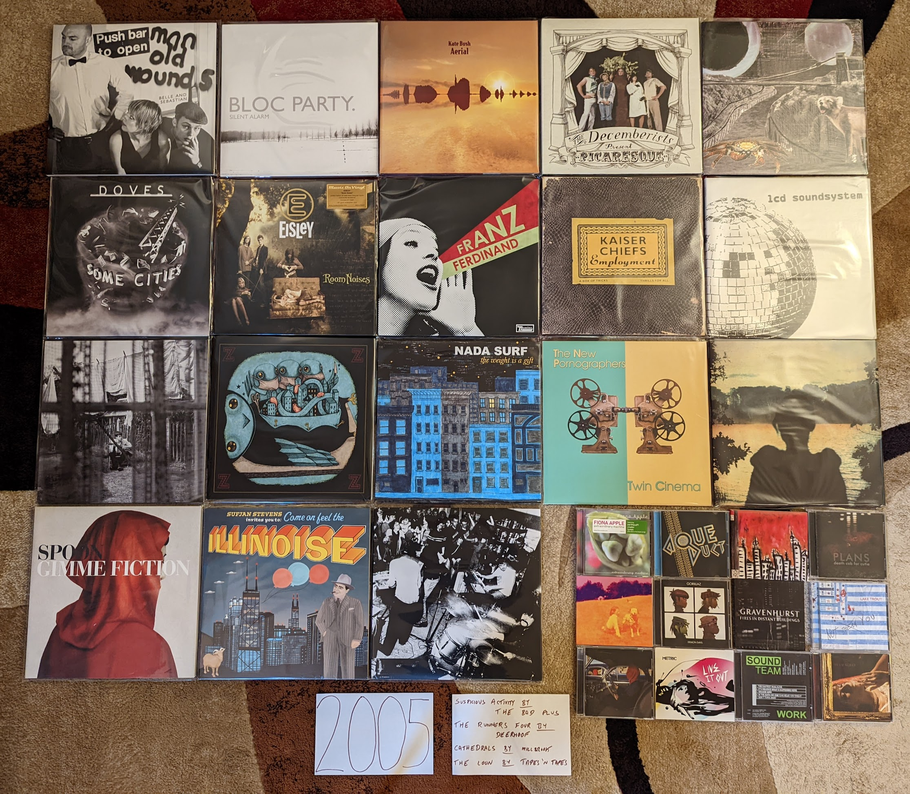{kind=link}
Extraordinary Machine by Fiona Apple - This album had the strange distinction of having leaked in full, in a very different form several years before this official release. At the time, I very much preferred the most more eccentric, almost mid-period Tom Waits sound of the first release, but I have warmed up to the official version. What would get released by the label was much closer to When the Pawn… which happens to be one of my favorite records of all time. This is the last album before she destroyed her wonderful voice with smoking. [Memory: At the time I felt so betrayed by the official release that felt like it went against the out there wishes of the artist and producer. We now know that at least some portion of the unofficial version was made by fans based on an incomplete, in-progress cut.]
I Sold Gold by Aqueduct - A lost classic that I feel very fortunate to know about. Such a good natured, electro indie-pop record with huge hooks and pretty melodies. This guy arrived with a full set of songwriting and home production skills. I wish he has made more records. [Memory: Every now and then Sirius Left of Center would become the champions of a relatively obscure record that would get no play or attention anywhere else. I always wondered if it was label relationships or DJ preferences that made this happen. Regardless, I feel very fortunate to have hear the pop masterpiece “Gowing Up With GNR” on the station back in ‘05.]
Suspicious Activity? by The Bad Plus - This live recording is rougher around the edges than their other more conventional jazz recordings, and there are far fewer “covers”. It is also my favorite. These, often wildly improvisational, originals are a peak that I don’t think they would ever replicate again. The opening track “Prehensile Dream” is about as exciting as contemporary jazz has ever sounded. [Memory: This makes me miss XM Beyond Jazz. That is where I discovered this band and album when I heard “Rhinoceros Is My Profession” in early 2006. The format of that station made jazz feel like a living, still in progress art form.]
Push Barman to Open Old Wounds by Belle and Sebastian - Actually an EP compilation that covers roughly the decade preceding its release. This was the first time I heard any of these tracks, and the originals are deleted from the catalog…so this counts as a 2005 record! It is also my favorite release by these guys. The spare, simplicity of the early EPs captures the charm of their early chamber pop sound better than any of the LPs from the same era. Later songs like “Jonathan David” feel like a preview of the 70s pop sounds that would soon dominate their releases. [Memory: In the early days of collecting vinyl, I found an original press of this collection, but I didn’t want to pay $45 for it at the time. It is absurd to think about this given what records cost now, but I would get a chance at a re-press almost a decade later.]
Silent Alarm by Bloc Party - A wonderful later work in the post-punk revival scene. It follows on well from the UK Indie sounds of the early 2000s, and layed down a blueprint for the “mainstream-indie” sound that would sell many records in the next decade. These guys were ahead of the new wave revival curve in a way that no-one seemed to notice at the time, especially on the outstanding “Banquet”. [Memory: This album got tons of play on both Sirius Left of Center, and Alt Nation, the clearest indication of indie’s growing mainstream relevance.]
Broken Social Scene by Broken Social Scene - This Canadian indie collective would eventually become too massive and unfocused for me, but this record captured them at their peak. This is big music with layers and layers of guitars and voices. Tracks like “7/4 (Shoreline)” show how indie-rock could work simultaneously as innovative art-rock and easy to enjoy pop. [Memory: In late 2005 Sirius Satellite Radio would start broadcasting Canadian content, including an indie focussed station called “The Verge”. This was one of many records I discovered there.]
Aerial by Kate Bush - I actively resisted this album (and artist) for years. This record was massive at the time, particularly with the NPR Music set. While I would learn to appreciate her early work in the 2010s, I didn’t connect with this later album until pandemic times. This is an art rock album that is so timeless, it would be impossible to place in any kind of era. More of a return to the experimental sounds of her 3rd and 4th records, this leaves behind much of the pop accessability of her late 80s peak. I can’t think of anything more Kate Bush than singing the digits of Pi on the song of that name. [Memory: For several months this was my album of choice, during my morning walks in the middle of the COVID19 pandemic. This music has a sense of isolation, with a soothing warmth that went well with the mood of that time.]
Plans by Death Cab For Cutie - A terrific followup to a massive indie success, and a major label debut. The first of many acts who would make this transition, and one of the most successful. The production is a bit sharper, but otherwise this fits in well with their earlier work. These are all pretty much ballads now, but they have always been their best at their most sappy. I lost interest after this record. [Memory: One of the positive side effects of these guys going to a major was that I could get this at Columbia House prices. One of the last discs I would acquire that way.]
Picaresque by The Decemberists - This will always be the peak for me. The perfect balance of their folky early stuff, and the later more progressive, conceptual work. So many whimsical story songs about mariners, bagmen, and barrow boys, I don’t know that anything else captures the wilful dorkiness of 2000s indie rock. I love it. [Memory: This song seemed to produce an unusually high number of “hit singles”. Indie music was everywhere in those days, and every song that escaped the limited visibility of college radio playlists was a winner. I knew about 5 songs already when I heard “16 Miliary Wives” on one of those music choice cable channels at a friends dinner party. Somehow that was what sold me on these guys.]
Green Cosmos by Deerhoof - I think the two releases from this band would highlight the two major threads of their sound. This one is maybe the most whimsical thing they have produced. A particular kind of childlike weirdness runs throughout the album. I mean it starts with a song that commands us to “Come See The Duck”! The album is also mostly in Satomi’s native Japanese. It is filled with keyboard riffs that make the Fiery Furnaces look tame by comparison. [Memory: I don’t think I ever heard this before I bought the vinyl reissue of it at Lakeshore Record Exchange on my first Record Store Day in 2010.]
The Runners Four by Deerhoof - One of the hardest rocking albums they have ever made, yet there is always a undercurrent of gentle pop. This one always has been a bit too long for me, but the highlights are very high. “O’Malley, Former Underdog” is a particular favorite. [Memory: At the time, eMusic was pricing albums per track. I remember this double album with all the short songs feeling a bit spendy under that model, and I put it off for quite a while.]
Some Cities by Doves - These guys were probably the most consistent act to come out of the UK indie scene of the early 2000s. Not quite as good as what came immediately before, but still a fine rock record. Radiohead had brought synths and samples into alt-rock and bands like this took the idea to wildly popular places. Like Coldplay but actually good. [Memory: I had been interested in this band for some time due to satellite radio, but had never checked out their stuff due to a lack of funds. With funds from my first full-time job I was finally able to get their entire back-catalog in 2005, when this was the latest release.]
Blinking Lights and Other Revelations by Eels - This record felt so huge when it came out, but going on two decades later, it has almost completely disappeared from public consciousness. It is a very subtle record of subdued and very pretty songs that can be easy to forget. It is incredibly enjoyable every time I do listen to it. A wide mixture of styles from late 90s style alt-rock to piano based ballads, this is a sprawling double album in the traditions of the late 60s. [Memory: This may be the album I have been looking for on vinyl for the longest time. Some day I might just have to pull the trigger on one of the expensive copies on discogs.]
Room Noises by Eisley - A bunch of weird kids from Texas making major key Radiohead songs. The three sisters at the center of the group had a remarkable combination of voices. This first record has a quaint kind of childlike wonder that is really enjoyable. [Memory: I was on-board early as their early EPs (particularly Marvelous Things) got serious play on Sirius Left of Center in the summer of 2004. I even used some free download codes I saved up from a McDonald’s promotion to download that EP from iTunes.]
You Could Have it So Much Better by Franz Ferdinand - At the time I was a little disappointed that this was so much like their first record, but given the change in direction that would come after this, I’m now glad we got one more in this style. In many ways the ultimate realization of the post-punk revival sound, this could also be seen as the peak of UK Indie. “Walk Away” is one of my very favorite songs. [Memory: When I was being on-boarded at my new job, I saw a CD copy of this on the corner of one of my new colleague’s desk. It was a good sign.]
Demon Days by Gorillaz - While this was certainly the most popular project by Damon Albarn in the USA, it is far less interesting to me than his other projects. That said, this album does more for me than the others under this name. I think I am mostly drawn to the minimalist electronic beats that point forward to the sound of The Good, The Bad, and the Queen. [Memory: I probably wouldn’t have given this a chance except for a recommendation that a good friend made during a conversation on AOL Instant Messenger. I can’t think of a more early 2000s way to hear about a record.]
Fires In Distant Buildings by Gravenhurst - A really pretty and somber record. An early 2000s take on the slowcore genre with some occasional uptempo tracks for contrast. Incredibly beautiful but sad. [Memory: I had been interested in slowcore for several years, and in late 2005 I had access to the early Pandora with its Music Genome Project to explore the genre further. I think I found out about this record via a Red House Painters seeded channel that played the Kinks cover “See My Friends”.]
Employment by The Kaiser Chiefs - It is easy to see these guys as a follow-on act to the Franz Ferdinand sound, but there are some old time rock and roll elements here that give a very different feel. I think how much a person is going to enjoy this record is dependent on how they feel about “la la la la” style singalong choruses. Leeds UK definitely had a sound in the mid-aughts and it pretty much was being drunk in the pub and screaming along with the jukebox. [Memory: I wish I could remember the sequence of events that led me to these guys. I know I saw them at Live 8. I drove through the night with one of my co-workers to arrive at the fundraiser concert in Philadelphia, and they were the first band on, shortly after noon. The singles off of this were certainly getting some serious play on Sirius. I also know that I had to import this record before it was commonly available in the USA. I just can’t remember what order these things happened in.]
Not Them, You by Lake Trout - A fusion of post-punk, shoegaze, and Radiohead style art-rock, it is hard to believe they started out a jazzy jam band. In many ways the most representative record of the early 2000s on this list, but also one of the most obscure. “Shiny Wrapper” is a stunning opener, and the record manages to keep the level high throughout. [Memory: I found out about these guys when their prior album was shared by a friend at a former job, during a CDR exchange. I really miss finding out about new music from friends, that never happens anymore as a fully grown adult.]
LCD Soundsystem by LCD Soundsystem - The genesis of “indie dance music” and a record that both seems more and less important than we thought at the time. I don’t know that this band was ever the game changer the press made them out to be, yet this record definitely showed a generation of Brooklyn bands that the indie kids, they want to dance. [Memory: One of the first really big buzz records from the indie era. The single “Losing My Edge” and copious blog hype had set this up for a new kind of indie fame. It was kind of weird for a relatively unknown band to launch their first album with a companion disc of bonus content.]
Frances the Mute by The Mars Volta - Another terrific modern day prog record from these guys. Everything from the cover, to the song-titles feels like a reverential throwback to acts like Rush and Pink Floyd, but the sound is very much rooted in post-hardcore. [Memory: It is hard to remember now, but there was a time when the RateYourMusic charts were dominated by various neo prog outfits. These guys continue to rank high, and I think it is because the kind of post-hardcore this is derived from is still valued as RYM becomes more concerned with what is “cool”.]
Chaos and Creation in the Backyard - A contemporary review of this album made the apt observation that the last several records that he had made (starting with at least Flaming Pie) had been perceived as comeback albums. That said, this is where things seemed to stick and he was considered a relevant active artist in a way that continues until when I write this (2022). I think maybe this is where Paul first realized the direct connections between the eccentric pop music he had been making for decades and what the indie kids were up to. This album is clearly aware of the connections, and as a result it feels of the moment in a way that is remarkable for someone at this point in their career. [Memory: Paul had always been my favorite Beatle. Suddenly after the release of this record, that was no longer uncool.]
Live it Out by Metric - I’ve always preferred the solo stuff by Emily Haines but there is a lot to like here in the finely produced indie-rock of her band. I do miss the edge that these earlier records have, but I’m not going to fault them for pursuing the mainstream fame that their increasingly slick sound would bring in the years ahead. [Memory: One of the first CDs I remember buying from Mike’s Movies and Music in State College, and one of my first discoveries from Sirius 97 The Verge.]
Cathedrals by Millbrook - When I think of this EP I realize there must be thousands, if not tens of thousands of records I would love, but I will never hear. This super obscure record is the perfect combination of Beatles pop and early 2000s indie, and I wish there was lots more of this. [Memory: I discovered this, like I’m sure 99% of the others who know about it, when it was featured on NPR All Songs Considered. This was the first time they broke something completely obscure, that owes its limited space in the popular consciousness to that 30 second segment in a popular weekly podcast.]
Z by My Morning Jacket - Alt country was in decline by 2005, and these guys were one of the last big names before the genre would become unfashionable. This record is already a half step towards the straight ahead indie-rock that they, and many of their peers would pivot to in the years ahead. The result is their finest work. [Memory: NPR All Songs Considered was becoming embarrassingly influential on my tastes around this time. I was already a big fan of their song “Dancefloors” which was a favorite from my early days listening to satellite radio. Hearing “Off the Record” on that NPR podcast was what really got me into these guys for a bit.]
The Weight is a Gift by Nada Surf - One of the great records that came out in the early 2000s from a 90s indie band joining in with the new kids. Really great pop songs with jangly guitars. [Memory: I found out about these guys when I heard the song “Always Love” on the Liquid Todd show on Sirius Alt Nation. The show was on at 10 PM to Midnight Saturday night, and was an interesting combination of electronic music and indie rock that was very to my tastes. I found out about a lot of great things there.]
Twin Cinema by The New Pornographers - This was my point of entry for this band. In many ways it does the best way of capturing what makes them great. The sharp pop songs, the sweet ballads, the wonderful harmonies. More than anything it does a great job highlighting the strengths of the three main contributors to the songwriting. [Memory: This reminds me of the first apartment I had after my new job, my first without a roommate. I listened to this disc all the time using my home theater DVD player (as was the custom at the time).]
Deadwing by Porcupine Tree - A return to more proggy sounds after a few albums of alt rock, and the most recent album which was on the gentle side of metal. That said there are still some hints of the lighter alt mid-tempo alt rock in “Lazarus” and the heavier sounds in “Shallow”. In many ways this is a great summary of why these guys are one of my favorite bands of the last 25 years. [Memory: At the time, this was my favorite album of the year. I tend to underestimate how I feel about this one, I really still love it. In fact I imported a vinyl copy as I wrote this paragraph. It joins my CD copy, which I clearly remember as the first new album I bought after getting my first real job in late April 2005. It was great to not feel completely broke anymore.]
Work by Sound Team - Another case where a band’s first EP is by far their finest moment. The rough around the edges post-punk on offer here is far more interesting than what would come on their debut LP. “The Fastest Man Alive” is still their best song. More post-punk revival bands should have featured the organ like these guys and The Walkmen. [Memory: I bought my CD copy of this after seeing them open for Death Cab for Cutie at the Bryce Jordan Center on the Penn State Campus. I’m glad I did, as this is way out of print now.]
Gimme Fiction by Spoon - The last of their early albums, and the last one with their trademark minimalist sound. Still the ultimate realization of piano forward indie rock, with some create guitar accents. Not their most consistent record, but still a great listen [Memory: The song that led me to these guys was “I Turn My Camera On”, which I heard on Sirius and immediately sought out the record. Interestingly the Krautrock groove that pulled me in is not very representative of their other work, which I ended up liking as well.]
Illinois by Sufjan Stevens [2005 Favorite] - The fanciest folk record ever made. Some incredible songs came out of the state based theme, and the range of instrumentation and styles is staggering. The band that he assembled for this record is something else, and many, many of these folks are off doing great things in various projects across the rock and classical worlds. It is hard to see this as anything other than than 2000s indie’s greatest moment. [Memory: This is another highly rated record that I resisted for a while because of all the hype. It was the heartbreaking “Casimir Pulaski Day” that changed my mind. That story of a deeply religious young person questioning their faith after seeing their first love die of cancer is one of the very best songs of all time. This album was also highly influential in my tastes going forward. I always saw myself a a rock guy, but this got me on board with the lighter side of indie.]
The Loon by Tapes ‘n Tapes - Another band that took the indie post-punk revival sound and added some additional, interesting elements. These guys like to mess with rhythm, and use heavy distortion on the guitars and vocals in a way that isn’t psychedelic but edgy. All their work has been very good, but this debut is still their top effort. [Memory: I always assumed these guys were Canadian, given their sound, and they even made a song called “Manitoba”. Turns out they are from Minnesota. Close enough I guess.]
Team Sleep by Team Sleep - Such a cool record. It uses electronics, samples, and atmosphere to turn millennial alt-rock into something way more interesting. Way better than the primary related band, Deftones, I wish they made more music for this wonderful side project. Every time I play this record, I’m struck by how interesting and enjoyable it is. [Memory: This is the only time in my life I discovered an album by one of the most cliche ways out there. I walked into the State College FYE at the old Nittany Mall, and heard this playing in the background. I went up to the counter and asked what it was, and they pointed to the jewel case on the counter. I walked out with this disc.]
Apologies to the Queen Mary by Wolf Parade - This is another of the indie bands out of the post-punk revival set who would make progressively more complex and diverse music as their albums progress. I much prefer the earlier simpler stuff. Admittedly, they started out with some wonderfully eccentric pop elements, but it was just enough on this one. [Memory: This was one of the first records that really directed my attention to the “Canadian Renaissance” already in progress. Thanks to Sirius The Verge I was hearing this stuff very early. This was the point where it started to feel like only our northern neighbors could still make good guitar based indie rock like this.]
2006¶
When I look at the picture below I’m struck by how many different ways I discovered these records. Some of these were the latest releases from acts I had been following for some time, but mostly they were completely new things. There are songs I heard on Sirius or XM satellite radio. There are things that were the hot albums on the indie music blogs of the day. There were small indie releases that were recommended by eMusic. There are 3 (!) albums that I discovered watching a UK music countdown show, repackaged as cheap filler content on the obscure US Cable network, HDNet. There is a album with a track I heard on a iMac commercial. Some of these were the top records on RateYourMusic, back when tastes were a little different there (more indie and mainstream). I was still using the AllMusic guide to do genre studies (in this case post-rock). There is an album I ran out and bought on the drive home from the local brewpub, where I heard it playing in the background.
This is also the year where I have by far the most releases that I would like to own on vinyl that I do not. In many cases, these records never saw a vinyl release, and are obscure enough that one is not likely to ever happen. As a result, there is quite the unsightly stack-up of CDs on the side of the image. This almost encapsulates the unsightliness of the CD as a format. The art is too small to be appreciated, and no matter how well you tried to take care of those jewel cases they are scratched up and a little cracked. Many of those discs were bought at City Lights Records, where I had started to shop when my old favorite store, Mike’s Movies and Music had closed. Many came from Amazon, in some cases imported from the UK (a new practice that I had adopted). One of these CDs, was imported from the UK by myself personally!
More than anything I’m looking at the image below and feeling powerful waves of nostalgia. This was the music of my younger self. A person I can relate to, but no longer completely am. I glad that I can always revisit my former self though these albums.
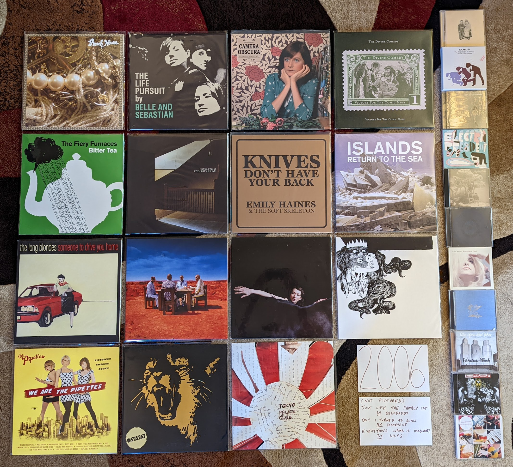{kind=link}
Beach House by Beach House - Listening to this is quite startling knowing the band they are today. This is a much smaller, slower, and meandering record than what they do now. This slight record was certainly enough to get me interested back then, and I still really like it today. [Memory: I found out about these guys as an eMusic recommended artist. I remember Greg at city lights being impressed how ahead of the scene I was that time. I also remember buying my vinyl copy at Amoeba records in San Francisco in 2009 and being surprised that they were making vinyl reissues of relatively recent indie records.]
The Life Pursuit by Belle and Sebastian - It is hard to remember now, but this was a controversial record when it came out. The transition to straight ahead pop they had started on their previous record was now complete. Everyone missed the half-folk and chamber elements, and it was widely regarded as sub-par. I really enjoyed these back to basics pop songs back then, and now consider this their finest record. This was also the album when Stevie Jackson and Sarah Martin really started to play a larger, and quite welcome role in the band. The mix of the three primary vocalists had become the signature sound of the band. It was almost like they had become a more twee and gentle New Pornographers.
Let’s Get Out Of This Country by Camera Obscura - The Scots understand indie pop like no other nation on earth. This might be the finest record in the whole genre. Back when hit indie records were a thing, this was one of the biggest. Everywhere from Pitchfork, Stereogum, NPR Music, and Spin wanted you to listen to this thing. Every service recommended it as a download, and it climbed the RateYourMusic charts in a way music like this can’t anymore. Holds up. [Memory: This was the first real concert I attended in Rochester, NY. I remember walking down the German house in 2009, and being excited that I could see bands like this in the town I lived in. This would be the beginning of three great years of shows.]
The Crane Wife by The Decemberists - This was the start of a new phase for a band that always liked drama, but now were completely centered on telling grand stories. A little preview of the proggyness that would fully form on the next one, this was still mostly the indie-folk of the first three records. This whole record tells a story that I’ve never been able to follow, but it doesn’t matter because the songs are so strong. A great guest spot by Laura Veirs on “Yankee Bayonet” as well. [Memory: I remember this being voted the top album of 2006 by NPR listeners and feeling a little bit old that my tastes aligned with that group. It isn’t my favorite from the year any longer, but it is close!]
Victory of the Comic Muse by The Divine Comedy - After a couple more serious records, Neil Hannon allows himself a little levity again. One of the very last of his records for me to warm up to, it joins the rest of the catalog as a favorite. He is probably the most consistent artist I know of. [Memory: I think I had only heard this once or twice before buying the entire vinyl reissue series.]
The Bright Lights and What I Should Have Learned by Duels - A late entry in the UK indie scene, it is a mostly guitar based Brit-pop derivative sound with a sprinkling of the keyboards the USA kids were getting into. I think it was because this sat uncomfortably between UK indie and the contemporary mainstream sound that this didn’t really find an audience despite being a really crisply put together record with some interesting sounds. Weirdly, this sounds a bit like the kind of “mindie” music that was about to become very widely popular in the USA. [Memory: I found out about these guys by watching “London Live” a repackaging of a UK countdown show that was filler material for an early HDTV channel called HDNet. The performance of the song “Animal” had an really fresh, dance-able sound that seemed to anticipate what was about to come in North American Indie.]
Tuesday Wonderland by Esbjorn Svensson Trio - In the 2000s jazz experienced a new kind of fusion, this time with indie and experimental rock music. These guys made several of the most important records in the movement. The startling Radiohead-esque “Fading Maid Preludium/Postludium” bookends a set of music that is only slightly more in line with conventional Piano jazz. The releases after this would get a little too difficult for me, and this is the one where the balance between artistry and accessability was most to my liking. [Memory: I was spending so much time looking for music, that a fairly obscure record like this one was coming at me from multiple angles. A featured album by NPR music, I was also hearing this on the Beyond Jazz channel on XM radio. I think one of the reasons I like my favorites so much from this era, is that I really picked them from a large number of things I had heard.]
S/T by Electric President - One of the records that followed on from the gentle indie-electronic sound of The Postal Service, but this one was much slower and more somber. I also like how these guys played around with song structure, there are bridges and unexpected transitions everywhere. This was really interesting stuff that never found the audience it deserved. [Memory: I had been a subscriber to Sirius Satellite radio since the summer of 2003, and it had become a primary influence on my listening. I had always heard that XM had a much wider playlist, but didn’t really have a full appreciation until I heard some XM jazz programming during an Orange Bowl trip in early 2006. I immediately subscribed upon my return, and “Good Morning, Hypocrite” from this record was one of the first tracks I heard on their indie station, XMU. I can almost still picture that song title in the saved track list on my portable XM receiver sitting on the dash of my old Purple Dodge Neon. I miss the old XM.]
Bitter Tea by the Fiery Furnaces - This is one of those records where I never understood the prevailing opinion. Somehow this is perceived to be the impenetrably difficult and dense follow-up. If anything this takes the experimentation and proggy-ness of Blueberry Boat and adds back in the strong pop component of the early stuff. Things like “Waiting to Know You” do an amazing job balancing the weirdness with the sweetness. I like this record way more than 95% of the human population. [Memory: This was the time when you could buy an unpopular record on vinyl at a steep discount. I don’t know if I even paid 10 bucks for a nice new copy of this.]
Just Like the Fambly Cat by Grandaddy - It took me a while, but I came to appreciate the last record from the first tenure of these guys. Some serious punk aggression (especially on the hardcore homage “50%”) has been added to the usual low-key, often downtrodden psych-pop. This would have been a great statement to end on, and I haven’t liked what has come since nearly as much. [Memory: I listened to this a lot on headphones around the time I lived in my little Park Ave apartment. I still like to crank it through cans every now and then. The fuzz sounds great that way.]
Yellow House by Grizzly Bear - I didn’t like this very much when it first came out to great acclaim. I connected much more with the next record, which featured far more conventional songs. I think after I had that blueprint to follow, I could better appreciate this more abstract work. [Memory: This was strangely difficult to hear for a massive indie hit. It wasn’t on eMusic, and I don’t recall ever seeing the CD appear at City Lights (or Best Buy). It was also out of print on vinyl for a shockingly long time, until I got the re-issue that came out in 2022.]
Knives Don’t Have Your Back by Emily Haines - [2006 FAVORITE] - A stunning piano based singer-songwriter record, that is completely unlike anything else I have ever heard. I really think she saves her very best stuff for the rare solo releases, and this outclasses anything from Metric by a fair margin. The production on this record is quite exceptional as well, and the dreamy mix really adds a lot to the impact of the top notch lyrics. [Memory: I became aware of this album via a post of the excellent video for “Doctor Blind” on Pitchfork. The artist is strolling through an empty department store in a creepy scene that really complements a fairly profound song about the over-prescription of anti-depressants.]
The Day I Turned to Glass by Honeycut - A delightful anomaly: hip hop influenced indie rock made by a classically trained cellist. I don’t think this ever found its audience, and I’m not sure it really has much of one. I really like it though. Listening today, it sounds a bit ahead of it’s time and it fits in well with what is going on in the frontier of R&B. [Memory I discovered this ]
Howling Bells by Howling Bells - I had been enjoying this record for the better part of a year when someone pointed out to me that it is a bit of a country record. They were right. It is dark kind of country made by Australians, but country nonetheless. This was back when the Bella Union label seemed like it was trending towards some sort of modern day 4AD, and this fits right in with that. “Setting Sun” is one of my favorite songs of all time. [Memory: I really struggled to acquire this record. This was another band I discovered on HDNet’s “London Live” show. Their performance was a little rough, but I liked it enough to DVR it and watch it over and over again. I remember waiting for a 2007 US release that didn’t happen, and I couldn’t find a way to import the disc from the UK on Amazon. Eventually I would buy a copy from HMV on my first trip to london in March 2007 and hand carry it back to the USA myself.]
Return to Sea by Islands - I like this even more than the much loved Unicorns LP, as the more serious tone does it for me. Plenty of whimsey still here, but the epic indie-pop of “Swans (Life After Death)” was a welcome expansion of the wounds used by that prior band. Even “Rough Gem” manages to be silly in a far more epic way. This is big indie-pop. [Memory: Another XMU discovery, the expanded playlist of my new satellite radio service was expanding my music collection.]
Silent Shout by The Knife - The kind of music only Scandinavians can make properly. Creepy atmospheric, yet highly melodic and certainly not the least bit danceable. This is the electronic music of calm reflection in a dark room. [Memory: This was the first time I can remember resisting a Pitchfork hype record out of principle. When I finally relented, it was very clearly an amazing record.]
Everything Wrong is Imaginary by Lilys - The Elephant6 adjacent band from Philly ends on a very high note. The superior of the two records to come out of their third phase. The sharply produced shoegazy indie-pop on offer puts to shame the myriad of new bands working in this territory at the time. [Memory: After this record came out I assumed it was the start of a glorious comeback for this guy. I didn’t realize it was the end.]
Someone to Drive You Home by The Long Blondes - Very derivative of the long history of post-punk and new wave, but the execution is perfect. In retrospect this can almost be seen as the period on the post-punk revival. This is where the new wave revival and imaginary 80s began. [Memory: I have always been unable to process exactly how much I like this record for some reason. When it was getting good press back in ‘06 I was so resistant to it. When I reviewed my candidates when making this list, I was tempted to leave it off. After half a listen I was rushing off to find a vinyl copy on discogs.]
One More Drifter in the Snow by Aimee Mann - Probably my favorite Christmas record that isn’t A Charlie Brown Christmas (which trancends the genre for me), a great collection of traditionals and originals. This captures the warm but somber mood that I associate with the holiday season, much like that jazz classic. [Memory: Around 2019 I created a playlist of my holiday favorites, and this is the traditional first album on all versions of that compilation.]
Pretty Little Head by Nellie Mckay - Another double album genre experiment, this time on an indie label, where this belongs. Less white girl rapping, and what remains is well done. The genres here are more looking back on Broadway and cabaret music, with some alt rock thrown in. [Memory: One of the first records I remember buying on eMusic. It was very surprising to see her on an indie, though it certainly made far more sense than this kind of thing being on Columbia. I had started using the eMusic platform in 2006 and its subscription based buffet was becoming very influential in my tastes.]
You Are There by Mono - Post-rock was a very tired scene by 2006, and these guys were one of the last great bands to emerge. Somewhere between the shimmering guitars of Explosions in the Sky and the chaotic strings of Godspeed You! Great Emperor maybe the last listenable combination of elements left to cover. Their finest record, with their definitive track “Moonlight”. [Memory: This album, and particularly the track “Moonlight” was one of the great rediscoveries while making this list. I streamed it during a morning walk during a review of the albums on the bubble for the year. I probably streamed it half a dozen more times that day.]
Black Holes and Other Revelations by Muse - This was the record that would finally break these guys in America, more due to better promotion than any shift in sound or quality. Still very big alt-rock music, with perhaps a bit more of the Queen style theatrics. The hit “Supermassive Back Hole” introduces a funky kind of groove that would hit at the broader template that would be used in the next few records. Looking back, this probably was the peak of their first era, and it makes me a little sad since I don’t like their new direction quite as much. [Memory: Another time when I got to feel a bit ahead of my time thanks to the expanded playlist of satellite radio.]
Bring Me the Workhorse by My Brightest Diamond - I became aware of Shara Nova through her work with Sufjan Stevens and The Decemberists, which led me to her solo catalog. Her debut is a subdued, and often moody record. At times it feels like a gentler, more classically trained PJ Harvey album. I don’t listen to this as much as her later work, but it is still a great one. [Memory: In the early days of my vinyl collecting, I could still buy back stock first pressings of records that weren’t big sellers. That is how I got this one around 2010.]
He Poos Clouds by Owen Pallett - I became aware of this record on the Pitchfork best of 2006 list, so I gave it a download on eMusic. They compared it to Andrew Bird, but aside from the violin, I don’t know why. This is some very out there, art-rock that is heavily influenced by contemporary classical music. I liked bits of it at the time, I love it now. A complex and difficult album, and a first class performance and recording. [Memory: This along with Shara Nova was my gateway into contemporary classical. It was very sneaky how they got me to accept the complex sounds by wrapping it in pop songs.]
Writer’s Block by Peter, Bjorn, and John - “Hey Google, play the hipster whistling song.” This was the first time that an indie artist made a song that felt like it was designed for commercials. This was the genesis of mainstream indie (or mindie as Carles liked to call it). That does nothing to tarnish an outstanding indie pop record, and really it only helped to elevate the status, and increase the production of great indie-pop records. [Memory: I heard (the now legendary) “Young Folks” for the first time when it was playing in the background of Otto’s Pub and Brewery, my hangout at the time. I stopped at Best Buy on the way home, hoping to find a CD copy. I came home with what would become one of my favorite records of the year.]
We Are the Pipettes by The Pipettes - In the mid 2000s, there were constantly new genres of indie that were going to be the next big thing, but produced a few big records before fading away. “Pre-Beatles pop-music” was such an animal, and the 60s girl groups were an obvious place find inspiration. In retrospect this does seem like the kind of gimmick that wouldn’t last long, but what a glorious debut record. They sing in an untrained but pure tone that sounds great together. The pop songwriting is great, especially on the classic “Pull Shapes”. [Memory: Yet another band that I discovered on HDNet London Live. It was such a surprise to see such an out there concept get any attention at all. I remember having Greg at City Lights order me a copy of their first US EP, and him asking me “so is this like a 60s girl group or something?” Kinda, but not exactly in a way that really, really worked for a short time.]
Operation: Mindcrime II by Queensryche - What a huge surprise. A sequel to one of my favorite albums of all time arrived, and it was far better than I could have imagined. A remarkable return to the classic sound of this band, we now know it mostly a Geoff Tate solo album. It would have been impossible to achieve the same high level of the original, but this is about 75% the quality, which is still very, very good. More than anything it takes the story to a new place, that somehow makes the first record more interesting from a narrative perspective. [Memory: I hadn’t thought much about these guys in years when I heard that this was coming out. Thanks to this record I would re-engage with their back-catalog and they would become one of my all-time favorites.]
In Rainbows by Radiohead - For a long time I saw this album as two stunners (“Nude” and “Reckoner”) and bunch of filler, but my perception has changed. I now can hear this as a whole statement, and it holds up to their albums leading up to this one. That said, this is the last one that I truely think works as a complete work. My opinion has very much changed on this record during the course of this project, and has motivated the most significant revision of my personal music narrative to date. [Memory: It is obviously very difficult to separate this record from how it was released. This was the first time a major artist released an entire studio album as a “pay what you want” download. Is that why I undervalued it for so many years, perhaps. Now it graces my vinyl collection in physical form.]
Classics by Ratatat - Instrumental rock that is very much not post-rock, this whimsical record is more like the modern Ventures. One of those bands where every album is very similar, and I only end up caring about their very best effort. [Memory: In 2007, I went on a bus tour of the Irish countryside north of Dublin. I remember a rich doctor was there with his wife and adult son who was wearing a Ratatat shirt. Why do I remember this, I don’t know. I’ve got nothing else for here.]
Hello Everything by Squarepusher - His records had been expanding to include more and more elements, and the title of this one seems to recognize a peak had been reached. After this he would bite off a bit more than he could chew, but the eclecticism works out well here. The jazz influenced electronica of “Planetarium” is a particular favorite, and probably the high point for this guy. [Memory: I found out about this artist on XM Beyond Jazz, where I heard “Modern Jazz Guitar”. The early XM was a great platform, and while I am still a happy customer of the modern SiriusXM, I miss those old stations with their edge case genres, and massive, handcrafted playlists.]
A Lesson in Crime by Tokyo Police Club - Sometimes a band’s first work is their best, and in this case it is a 17 minute long EP. The rawness and rough edges are a positive here, and it is almost like they ruined themselves by started to understand what they were doing. This is pure garage, the sounds of kids who don’t completely know how to make rock music, but do so pretty effectively anyway. The songs are strange and wonderful, particularly the charmingly amateurish science fiction of “Citizens of Tomorrow”. They would never come close to this again. This is my favorite EP of all time. [Memory: I saw the band play an opening set as “the next big thing” in a packed to the gills basement club in Temple Bar Dublin. They played the EP in sequence and nothing more. They pulled a girl up from the crowd to sing the one line of female vocals from “Nature of the Experiment”. A buzz band at their peak, and I was glad to be there.]
2007¶
I had a sense that when I got to this year, I would have a bit to say in the introduction text, but didn’t anticipate all the topics that would come to mind. This was a pivotal year for the music industry, and for me as a listener. These two things are not coincidental. The MP3 had almost a decade to destroy the model for pop music that had existed since the late 1960s, and at least initially, what was left in the ashes was wonderful. By 2007, portable media had made the MP3 a practical means for music consumption in almost all contexts. In mainstream music, the single was now again king, but album based rock music was somehow stronger than ever. Digital distribution had raised awareness of indie acts that in previous decades would have mostly toiled in obscurity and at best might have been the favorites of music nerds, and then only retrospectively be discovered by listeners at large. In this era of music blogs, the obscure could rapidly become ubiquitous, and attention was getting drawn to increasingly diverse models of what rock music could be.
The way I was consuming music was changing rapidly, but I clung to the old ways out of nostalgic stubbornness. Like most people my age I had accumulated a significant and very not-legit collection of MP3s. Around this time in my life, I started to assemble a legit recreation and expansion of these illicit files. I was using an expanded pallette of (legal) means to acquire and curate a rapidly growing collection. This was the golden age of the subscription/buffet pricing scheme at eMusic, who for a nominal fee (15-20 dollars a month) could provide a path to 10 or more indie label releases in digital format. At the time, I had started to buy my first digital albums from Amazon, but digital was eclipsed by CDs which were still the main way music was fining its way into my collection. I would visit City Lights records every Tuesday during my lunch break and leave with a clutch of the latest releases and likely a bunch of catalog titles I had special ordered. These were the first crys of “the CD is dead” but I wasn’t listening. I kept detailed records of every release that made it into my collection regardless of format and I know that the first album I bought (Hissing Fauna, Are you the Destroyer? by Of Montreal) was the 900th item cataloged. A full 372 albums later, the 1272nd record (Weirdo Rippers by No Age) would be logged, surely the most music I have ever acquired in a single calendar year.
Most of the music I was listening to was still from years gone by, but I was listening to more new music than I had ever done before. I have an interesting artifact from this time, the first comprehensive attempt I ever made at a best of the year list as a full grown adult. It isn’t the final version (unfortunately lost to time) but an in progress version that I sent to myself via E-mail. I remember working on this list during my lunch breaks at work during the last months of the year, and I was sending it home to complete there over the holiday break. At this point, I owned and could assess 79 different releases! I know what I considered to be my top 25 records at that time, and 21 of those still make my modern list. This is a much higher ratio than what would survive from my 2009 favorites (see below), and I think this is a product of my ability to still listen with a kind of focus that the copious consumption facilitated by digital streaming would soon destroy.
One of the records that appeared on that original list of favorites that feels like a case study in everything mentioned above. In Rainbows by Radiohead was the first “pay what you want”, DRM free, digital release by a major, internationally famous rock band. Admittedly, they were a famous rock band that didn’t seem very interested in being famous. At the time I have no doubt that I included it on my list because I thought that it was an important release, and 15 years later, I am convinced that it is one of the most important releases there has ever been. It is hard to view this album separate from the context in which it was released, and I can’t of a better way to summarize where pop music was in 2007 and my relationship with it.
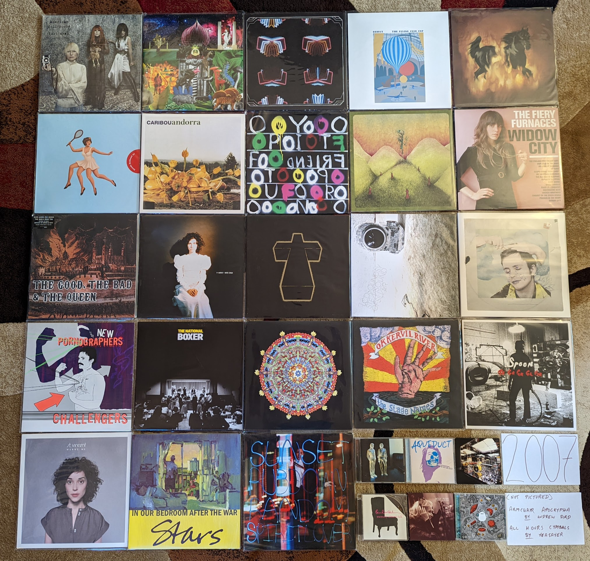{kind=link}
Pocket Symphony by Air - A colder more somber record from these guys that fits in very well with their other work. It is happy to sit in the background in a way their other records do not. That icy, sterile album cover is a perfect summary. [Memory: I remember Greg from City Lights Records telling me he liked to put this on as he was starting his day in the store. That sounds just right to me.]
American Doll Posse by Tori Amos - This was the beginning of a Tori revival for me, and the start of a revival for the artist. I think playing a few “alternate roles” for the concept of this record was freeing, and we got something considerably more interesting than what had come immediately before. Every album since this one has been a winner. So many different styles on this record from the mid-tempo singer-songwriter fare of “Bouncing Off of Clouds” to the rocking “Teenage Hustling” to the classic devastating story song balladry of “Roosterspur Bridge”. [Memory: I saw Tori for the first time on this tour, when it came to Pittsburgh. It was a halloween show and the crowd really took the costume thing very seriously.]
New Magnetic Wonder by The Apples in Stereo - I was very into Elephant 6 at the time and was very interested that one of the original bands was still making new music. This was the first of two records in a a very ELO style, with some weird atonal experiments thrown in. Some stunning pop music, that makes me sad that Robert Schnieder has largely retired from performing. [Memory: At the time I didn’t like the shift to Jeff Lynne territory, but wow do I prefer it to the garage psych of their early records now.]
Or Give Me Death by Aqueduct - Even more than the first record, this album sounds a bit like what would happen if Modest Mouse went full blown pop. Some really interesting, intricate songs. I really wish more folks had found these guys so they could have made more music. [Memory: I saw them as an opening act at Water Street, a few years after this record came out. I think I was the only one who was familiar with their stuff. Great show.]
Neon Bible by Arcade Fire - Until the awful Everything Now was released, this was my least favorite of their albums. Unlike that mess, I still really like this one. It was never going to live up to the incredible debut, but there is a lot here to like. I especially enjoy the church organ and pomp of “Intervention” and “My Body is a Cage”. [Memory: I waited a really long time to buy this one on vinyl. I’m not sure why, as this is a brilliant record that sounds great on the analog format.]
Mirrored by Battles - A really cool, percussion forward post-rock album. Not quite math rock, but still lots of interesting rhythms. They would never make something this interesting again. [Memory: This kind of defines the line for an album I like, but don’t need to own on vinyl. I’ve considered it many times, but really digital is good enough for this. Why, I’m not exactly sure.]
Flying Club Cup by Beirut - One of those bands, where I like much of their music, but love only a few things. This is by far my favorite of their records. It is a much stronger statement with solid songwriting throughout. “A Sunday Smile” has those nostalgic, highly melodic, feel good vibes that is their best sound. [Memory: I saw Owen Pallet join them on some of these tunes at Pitchfork 2009, and it is the moment you see in the banner above.]
..are the Dark Horse by The Besnard Lakes - A really nice low-fi, psych record with some cool little Beach Boys elements. They would milk this formula to good effect for a few more records, but this will always be my favorite. “For Agent 13” is my favorite use of shortwave numbers stations in a song. [Memory: When I started buying vinyl records, this was one of the first recent releases I picked up. It was also one of the first records that made me realize the shortcomings of vinyl production, when it arrived covered in scuffs.]
Armchair Apocrypha by Andrew Bird - I know many people consider this the inferior follow-up, but I prefer it to anything else in his catalog. I think it focusses more on straight ahead indie rock in a way that serves the purpose well. The slick use of the looper and strings is still there, but the songs are sharper and catchier. That said, this isn’t something I am revisiting often today. [Memory: I saw him on this tour at the State Theater in State College, PA. I really enjoyed the show. Only a few years later I saw him in Rochester and it was awful. Had the performance changed, or had I?]
23 by Blonde Redhead - A really nice midpoint between dream-pop and straight ahead indie rock. I didn’t realize it at the time since I was discovering them well into their career, but this is the sound of an “old indie” band updating their sound to fit right in with the new scene of the moment. [Memory: I have to admit, I bought this as much for the striking cover as for the solid reviews. Surely one of the last times I picked a record that way?]
Andorra by Caribou - It doesn’t seem like it today, because this kind of thing is everywhere now, but this kind of psychedelic, electronic thing was very innovative at the time. He would have two great records after this, but this was the peak. A great mix of pop and experimentation. [Memory: I’m a bit ashamed to admit that back in these days I was getting almost anything Pitchfork gave BNM to that sounded half wise interesting. The indie stuff was all on Emusic, and an album was about 2-3 bucks there. It was worth it to even hate listen the thing. This one really worked out.]
Friend Opportunity by Deerhoof - My first record of theirs, and still my favorite. The perfect mix of the punk aggression and the pop cuteness. The definitive early 2000s indie band at their peak. Such complex, unusual music that manages to be unbelievably re-listenable. I’ll never get sick of this record. [Memory: This was an amazing time for musical discovery. The tools at my disposal to hear new things and rise of indie created a unique situation I will never see again. Every couple weeks I was discovering a new favorite band like this that already had a half a dozen or so great albums.]
Copia by Eluvium - It is hard to make ambient music that really stands out. This is gorgeous, and wholely unique. There isn’t anything else out there with this same kind of warm but vacant vibe. The title of the track “Indoor Swimming at the Space Station” really captures the scene well. [Memory: I was really into the ambient works by Eno at the time and when I saw a modern ambient record getting good press, I had to check it out.]
Widow City by The Fiery Furnaces - A number of indie pop acts had been becoming increasingly weird over the last decade or so, and these guys started out the weirdest of them all. This is a lot to digest. The funky keyboards, the Zeppelin-esque hard rock guitar, Emily Freidberger’s off-kilter delivery of her brothers weird poetry, all framed by mostly jaunty piano based pop songs. Peak weird suited these guys best of all. [Memory: At the time, they had been so productive it was easy to assume this would go on indefinitely. Little did we know we would get only one more (fairly conservative) effort, and the sibling band would go on permanent hiatus.]
The Good, The Bad, and the Queen by The Good, The Bad, and the Queen - The work of a unusual supergroup that ends up sounding more like the somber, non-fiction continuation of its most famous member’s former band (Blur). A brilliant meditation on the role of England in the 21st century. For almost 10 years, this was the most valuable record in my collection, and it deserved to be so. It is a cult classic of the highest order, and one of my very favorites. [Memory: In 2007 I took two trips to the UK for business. Both times I was able to get up to London to do some tourist stuff. This album became the soundtrack to the first trip and I streamed it repeatedly on my trusty old iPod nano. On the second trip I saw a special performance of the record in the moat of the Tower of London. What a memory I will cherish forever!]
White Chalk by PJ Harvey - [2007 FAVORITE] What a left turn for Polly Jean. The guitar is almost gone. The muscular vocals are no more, replaced with her “church voice”. The aesthetic of this album is remarkable. Barely proficient enough to make a piano based record, she finds incredible songs in the simple arrangements. The creepy victorian attire she matched to this music really completed the scene. Already an all-time great, this is where it went to the next level. [Memory: I was already going to City Lights every Tuesday to pick up the latest releases, but I particularly remember rushing out as soon as the store opened that September to pick this one up.]
Cross by Justice - While Daft Punk generally get all the attention these guys made the foremost masterpiece of French Electronic music right here. Everything is perfect, from the bombast of “Genesis”, through the pure joy of “D.A.N.C.E.” to the wonderful crassness of Uffie’s rap on “The Party”. This might be the best electronic dance music ever made. [Memory: I used to like to play this during my runs at the time. I remember playing it over the stereo system in the work gym one time and being really embarrassed when Uffie started in on her rap, lol.]
Sound of Silver by LCD Soundsystem - It can be hard to remember that before EDM ruined things, electronic music was was of the most interesting and fertile grounds for new musical ideas. They aren’t really doing anything new here, but the combination of Krautrock grooves, disco beats, and New Wave vocals was the perfect pallette for some great songs. “Someone Great” is a top 10 all-time track. [Memory: I was already sold on these guys from their early singles and was right on this album when it was released. I remember Greg at City lights being very lukewarm. I remember telling one of the trendy interns at work about it, and how meh they were. It eventually became regarded as an all time classic. I felt very ahead of the curve.]
Night Falls over Kortedala by Jens Lekman - This is a weird case. A classic album, that the artist decided to replace with a completely new version. I think I still like the original more, since it has a wonderful quaintness that isn’t quite as strong on the new version. It is a guy trying to make the symphonic Scott Walker records in his bedroom. The kind of pure pop singing that only Scandinavians are allowed to do these days. [Memory: This was the first year that I reviewed the top albums lists by the major sites. This one was very high on the Pitchfork list and I gave it a shot.]
Memory Almost Full by Paul McCarney - Paul clearly was becoming aware of the peaking indie rock scene, and it shows. One of his strongest later year efforts, especially the power pop of “Only Mamma Knows” and the eccentric vocoder and harpsichord experimental pop of “Feet in the Clouds”. [Memory: I remember listening to this on my Sansa as I waited for my plane from Heathrow to Dublin, drinking a Sam Smith Oatmeal Stout right at the gate.]
Obligatory Villagers by Nellie McKay - It is weird that her best album is almost impossible to hear these days, and I’m glad to have the physical CD (I assume there are rights issues). The perfect combination of comical commentary and top notch songwriting. This time with an amazing collection of jazz musicians to give everything a dramatic cabaret feel. [Memory: Soon after this album, she did a video with NPR music that documented her songwriting process, which was quite remarkable.]
Friend and Foe by Menomena - The first shot fired in the “floor tom band” scene. This highly percussive brand of melodic indie rock was super novel at time, but would be cliche less than a year later. Still a solid record, but it is hard to hear it the same way after all the soundalikes. The sax does add a little something extra that makes this hold up a bit better than the rest. [Memory: These guys hold the unique distinction of being a band I have seen live, but do not really remember having seen. I saw them in Philly in 2010, and remember it as being a good show, but nothing else really. At least I have the shirt to prove I was there.]
Challengers by The New Pornographers - An outstanding record that both shows what a great pop band they are together, but the strengths that the three primary songwriters have as individuals. Also some great vocals from new member Kathryn Calder, especially “Adventures in Solitude”. “My Rights Versus Yours” is one of the greatest opening tracks ever. The way it slowly builds to introduce the sounds of the record is first rate album sequencing. [Memory: At first I wasn’t so sure about the mellower mood of this record, but I now appreciate this as one of their finest efforts.]
Boxer by The National - The pivot album between the more punk influenced sounds of the first few records, and the mid-tempo alt-rock that would come. First rate musicianship throughout, and Matt Berninger’s voice is as rich and textured as it would ever be. “Mistaken for Strangers” is the finest product of their early phase. [Memory: I was so resistant to these guys, and refused to engage with this record when it was new. All of a sudden when I hit my 30s, I liked few bands more.]
Hissing Fauna, You Are the Destroyer by Of Montreal - The album where his bedroom psych pop went dance. It wasn’t as big of a tweak as it sounded at the time, but it was apparently the move that made the world appreciate the talent that had always been there. [Memory: I remember playing this CD in my office after a visit to City Lights Records on new music Tuesday. The uptempo dance groove was a bit shocking to me as a long time fan, but I was on board for the new sounds from the start. I was shocked that the general public was too. It was a unique time.]
The Stage Names by Okkervil River - This was a straightforward indie rock pallette cleanser in one of the most experimental eras. The definition of NPR music, it is quaint but not bland, and often quite pretty. “Savannah Smiles” is a particular highlight. [Memory: I saw these guys in Rochester on the next album cycle. It was clear from the setlist that they recognized this as their best work.]
Ga Ga Ga Ga Ga by Spoon - Indie rock was peaking and new buzz bands were emerging every week. Some of the American indie acts that had been at it since the late 90s were raising to prominence in a whole new way. This was the record where Austin’s biggest secret used their heightened influence to make a very big, Motown tinged record. It was their highest point. [Memory: There are two times in my life I had to pull over my car because I heard a new song that was too good for me to concentrate. “You Got Yr. Cherry Bomb” was one of them.]
Marry Me by St. Vincent - Far smaller, but no less complex, the contrast is stunning with where the artist is now. I miss the sound of this record (and the one that came later). Somehow she has gotten way noisier and flashier, yet way more boring. These ornate, but subtle home recordings are some of the finest songs in indie-pop history. I try to not be one of those people who complain about artists selling out for mainstream fame, but I can’t see anything else here. [Memory: I downloaded this record from eMusic based purely on their review. I got so much great music off of that site.]
In Our Bedroom After the War by Stars - I know the record before this is supposed to be the classic (and it is a perfectly fine indie pop record) but this will always be my favorite. Such sweet little songs with strong melodies and warm vocals. Every now and then they show glimpses of something more than pop, like the jazz influenced “My Favorite Book”. [Memory: One of those records I listened to on repeat on my Sansa MP3 player during lunchtime walks at work around the East College Ave area.]
Random Spirit Lover by Sunset Rubdown - A wonderfully strange record. Low budget indie-prog made by an artist who had won fame making straight ahead indie rock with his other band Wolf Parade. I assume that connection was the only reason the general music press even cared about this, but I’m glad it was brought to my attention. You get the impression that the musicians being stretched way beyond their ability, but what they produced ended up amazing anyway. “Stallion” is so over the top and outrageously good. [Memory: When I started buying Vinyl LPs, this was one of the first things I sought out. This is meant for physical media.]
All Hour Cymbals by Yeasayer - Menomena were first, but this was the record that broke the sound. One of those discs that would spawn a million imitators, this kind of percussive, dance-able indie-pop would be pervasive over the next half decade. While this band would soon move on to other things, they leave behind one of the finest and most interesting entries in the sub-genre. [Memory: I distinctly remember listening to this for the first time waiting for an early AM flight at the State College, PA airport.]
2008¶
When I look at my favorites I am struck by two things. First, almost the entire list is comprised of fairly new (at the time) indie acts, with only two “legacy” artists in Portishead and Steven Wilson (who was himself a newly minted solo artist after the end of Porcupine Tree). The second thing I notice is how almost all of these were discovered as they came out and represent what I was actually listening to in 2008. Only the Metronomy and William Brittelle records were retrospective discoveries, and only by a year or two each. It almost seems like this is the most aligned I would be with what was hot and “now”. This year also has the distinction of being the year that I bought a turntable and started buying vinyl records (in November). It was here that I started the practice of buying my favorites on vinyl. Without streaming, new discoveries were often still made on CD, so I own no less than 11 of the albums below on both vinyl and CD. If it wasn’t on eMusic, I was often getting new music on the small discs and making the upgrade when something became a favorite.
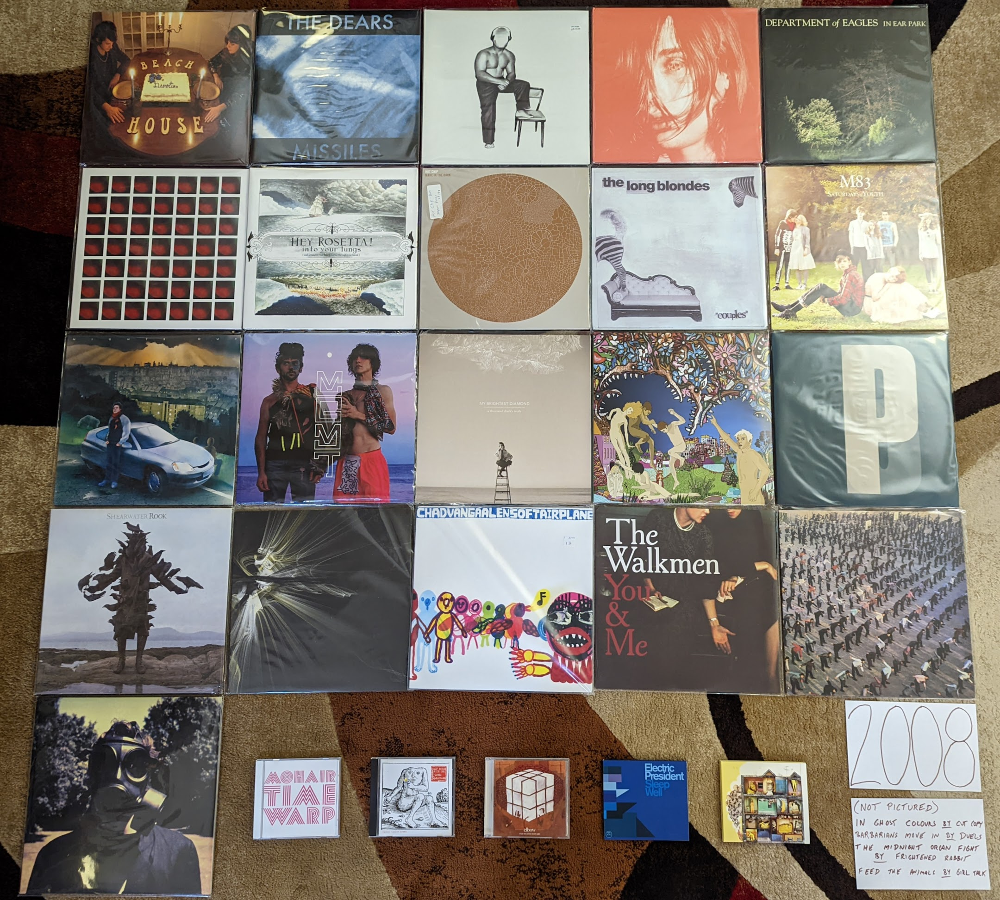{kind=link}
Devotion by Beach House - The second (and final) record in their original sound before moving to far bigger and more popular sonic territory. I do prefer what they would become, but there is a lot to love on these much smaller, and more acoustic early songs. They would keep going upwards from here, but they were always great. [Memory: I saw them on this album cycle playing a twin headline show with The Walkmen at the TLA in Philadelphia. I had a nice chat with Vicky Legrand at the merch booth and shared the memory of their issues at their first London show in 2007. She smiled and almost yelled: “You saw the worst show ever!” I bought of copy the “Used to Be” single as a 45 and when I got home from the 3 hour drive, I listened to the sound of what was to come.]
William Brittelle by Mohair Timewarp - My point of entry would be his concept 2010 concept album, but I would circle back to this weird art rock record not long after. A very strange album with extremely strange lyrics. I really wish New Amsterdam was releasing music like this. [Memory: This might end up being the last CD I ever buy. I realized it was one of the few albums I didn’t own in any format and it wasn’t streaming. So I bought a CD copy in early 2022.]
Half Hours with the Lower Creatures by Rachel Taylor Brown - I’m fairly certain 99% of the folks who know about this artist, were introduced via the appearance of “Stagg Field” on NPR’s “All Songs Considered”. I’m not a huge fan of the show, but I really have to credit those guys for shining a light on some very non-commercial music by an obscure artist who would otherwise get no attention. A terrific art rock album. [Memory: After hearing this amazing record and the follow up in 2009 that I liked even more, I ordered her entire back catalog from CD Baby. The rest wasn’t that great.]
In Ghost Colours by Cut Copy - There were a bunch of bands that were making music that referenced an imaginary version of the 80s that never really existed, and then there were these guys. This is a wonderful modernization of New Order or OMD for the home recording era. [Memory: I totally held a vinyl copy of this in my hand at the Pitchfork music festival in 2009. I didn’t realize how few of them they made, and that it would never get a re-issue. This kind of thing would go out of style, and I assume it will never be repressed.]
Missiles by The Dears - Another great Canadian husband/wife band (why are there so many of these?). If The Arcade Fire are too subtle for you, you can count on these guys. Super over the top, dramatic rock that manages to be both kinda stupid and very beautiful. [Memory: Around this time I was listening to the XM Canadian indie channel called “The Verge” where I discovered this band and many other favorites.]
Offend Maggie by Deerhoof - Simultaneously one of the heavier and quieter albums by one of the most unique acts to come out of millennial indie. [Memory: I regretted buying this on vinyl at the time, which feels odd to me now. It also happens to be one of the more valuable albums I own now.]
Microcastle by Deerhunter - This is where the formula came together. All the great psychedelic atmospherics were still there, but now we had moments of supreme pop songwriting spread throughout. [Memory: I was always very skeptical of Pitchfork, but man they were right to champion this amazing record.]
In Ear Park by Department of Eagles - One of those records I like way more than almost everyone else. I still like this slightly more than any of the albums by Dan Rosen’s main band, Grizzly Bear. I’ve always been a sucker for this kind of fuzzy, layered production, and the spare piano based arrangements really work for this kind of music. [Memory: For some reason this became a favorite album to listen to while I ran around this time. Totally inappropriate to task, this was the soundtrack to many laps around the Penn State IM building track.]
The Barbarians Move In by Duels - A massive change-up after the UK Indie pop of the first record. A moody post-punk record, with moments of orchestral rock pomp. The title song is a striking, dirge-like record that makes me wonder what happened to these guys between releases [Memory: I didn’t realize until the end of the year that this had come out. There were a few reviews on Amazon where folks were calling this a lost classic. They were right.]
4 by Dungen - A return to the softer, more melodic side of things. Doesn’t feature the flute like what came before and after, but still gorgeous stuff. [Melody: This was around the time the English language imitators Tame Impala appeared. It really bummed me out that this album was overshadowed by second class copycats.]
The Seldom Seen Kid by Elbow - The biggest band to come out of 2000s UK Indie. They came up with a sound that combined the best points of Blur style Britpop and classic Peter Gabriel style Art Rock. This was the album after which they became too big to be Indie any longer. [Memory: When this album first was getting press, I dismissed it as the next Coldplay but I’m glad they proved me wrong.]
Sleep Well by Electric President - This was the last record that I really enjoyed from the minimalist electro-indie pop that was big in the first decade of the millennium. Some really great shoegazey post-rocky guitar in this one that added a new texture to their sound. A very mellow record with a calm vibe that I really enjoy. [Memory: This reminds me of the walks that I would take during lunch break from work, listening to my latest music acquisitions on my old school Sansa 200 MP3 player. This was a nice calm record to put on in the middle of stressful day at a startup company.]
The Midnight Organ Fight by Frightened Rabbit - The most Scottish of the Scottish bands. Such a wonderful folk-punk band with enough UK Indie bombast to make a big sound without going over the top. They would never match this again, but most bands never make one almost this amazing. [Memory: I liked this record the first time I heard it, but I didn’t really connect with it until a trip to LA in late 2008. This was a difficult trip for me, as I realized I was growing apart from the group of friends I was traveling with. I took the MetroLink train into the city solo to have a look around, and this was the soundtrack to my visit.]
Into Your Lungs… by Hey Rosetta! - This year was probably the peak of Canadian Indie and this was one of the most representative records of the scene. So big (but unpretentious), so elegantly produced (but still quaintly charming), a remarkable record. Americans can’t make music this kind of music without sounding like cheeseballs. [Memory: This was another record that got a ton of play on XM The Verge. Canadian Indie was where it was at in 2008.]
Made in the Dark by Hot Chip - The start of a more “serious” turn from these guys. This still is slightly goofy dance-pop, but the humor was no longer the focus. Still charmingly self-recorded, but the more straight ahead themes makes for a more long lasting impact. [Memory: I forever get this mixed up with the record that would come next (they are both great!) I even included this record in the image for both years.]
Feed the Animals by Girl Talk - One of the last great outcomes of pop music’s post modern era. It was also one of the most notable “pay what you want” downloads in the post-MP3 era. His best attempt at merging the classic rock and hip-hop eras. [Memory: Another running playlist regular for me. Hard to hear this without thinking about turning laps at Tudek Park in State College, PA.]
Couples by The Long Blondes - One of the most unjustifiably ignored follow up records out there. Just as good as their much loved debut, this record probably mostly suffered from a lack of promotion and tour support. My favorite band from the pop side of the post punk revival, this band blows away The Yeah, Yeah, Yeahs in my opinion. It is very sad this would be the end. [Memory: I was amazed to buy an unopened back-stock original pressing of this in 2021, 13 years after release (on Amazon of all places!).]
Saturdays = Youth by M83 - Looking back, it almost seems like this record is the genesis of the entire “imagined 80s” aesthetic that would predominate a wide swath of the indie over the next 3-4 years. The chillwave, the vaporwave, the other acts that seemed to be imitating a kind of 80s pop music that never actually quite existed. Look at that cover, and its characters from not quite a John Hughes film. It isn’t actually that different from what this band had done in the record that preceded it, but it just found a focus that anticipated what was to come. [Memory: It is hard to think of this record without thinking of Hipster Runoff. Our boy Carles also understood how important this sound would be to the future direction of indie.]
Rabbit Habits by Man Man - This album feels like a straight up modernization of the Captain Beefheart formula. It is a complete anomaly in the indie scene of the day that works really well. [Memory: This is the last show I would ever see at the State Theater in State College, PA. A great venue that would bring a kind of indie show to the town for a short window in the last years of the aughts. They didn’t have a liquor license at the time, but had a great coffee shop. I was so hyped up on caffeine for the show, and that was the right state for this music. The headliner was Cursive, who were awful, and I left after one song.]
Nights Out by Metronomy - Unlike most people, I prefer the more poppy records to come, but I like this as well. Much like Hot Chip, this band knows exactly where to find the line between joke band and serious music. [Memory: I was first attracted to this album by the amazing cover with the painting of the guy proudly in front of the first generation Honda Insight.]
Oracular Spectacular by MGMT - No band or album exemplifies the “mainstreaming of indie” more than what we have here. It deserved to be the thing that broke indie to the general public. Fun but smart electronic pop music, the kind of thing that appeals to teenagers and music collecting forty year olds in equal measure. This is the least weird record this group is likely to ever make, and likely the beginning and the end of any wide cultural significance. [Memory: These guys have always been a major label act, but it was the indie music fans who discovered them first. It was shocking to see a band like this get such massive attention, but in retrospect the whole thing felt calculated by Columbia. The birth of Mindie Rock.]
A Thousand Shark’s Teeth by My Brightest Diamond - A transitionary record between the guitar centered songs she started with, and the very fancy chamber pop that was coming next. One of the greatest voices in indie, who often doesn’t get enough credit for the range and quality of her songwriting. I do miss the occasional heaviness she worked into the first two records. [Memory: The first time I saw Shara live was at Bugjar in 2011, when she was still in the guitar focussed configuration of this album cycle. It was quietist I have ever seen an audience be while an artist performed at that venue.]
Skeletal Lamping by Of Montreal - My opinions of this record have evolved significantly over time: starting at disappointing mess, to flawed but partially listenable, and today as possibly the best record by one of my favorite acts from these days. This collection of micro-songs really needs to be listened to all at once. It is also best not to spend too much time thinking about the often cringeworthy lyrics, and instead focus on how interesting it all sounds. [Memory: When this came out, I really thought that fame had gone to Kevin Barnes head, and ruined him. It turns out fame did go to his head, and created something wonderfully over the top.]
Third by Portishead - [2008 Favorite] - It seems like this is going to be the last album by this legendary band, and I’m happy with this being their final and most important statement. There is no other album like this, and it arrived as wholely unique in music history. This haunting, uncomfortably minimalist electronic music only makes sense when listened to in a dark room. The way they deconstruct their own signature sound on “Machine Gun” is one of the most unique things a band has ever done. A top 5 favorite of mine forever. [Memory: This album made it painfully clear to me how bad the state of vinyl production was at the time. I bought three copies of it, until I was able to assemble a single reasonable copy from discs extracted from two different instances of the album.]
Rook by Shearwater - Such a beautiful voice, and so much instrumental talent in this band. That said, this is the only one of their records that doesn’t bore me to tears. The significant use of the classic emo quiet/loud dynamic is what does it for me I guess. [Memory: This was the vinyl album that made me realize how good things could be when you got a good pressing. For some reason, I was able to get this for like 5 bucks on Overstock.com. It was an impulse buy that inspired me to buy my first proper Turntable. I can remember clearly hearing the crisp, surface noise free sounds in my tiny upstairs room in the Woodycest apartment I shared at the time. I had the record on the Technics SL-1200 I still use, and probably will use for the rest of my life.]
At War With Walls & Mazes by Son Lux - One of those acts that owes their career and fame to NPR music. This nerdy electo-hip hop is the kind of thing that is ready made for Public Radio. I prefer the proggy sounds that would come later with the full band incarnation, but this early recording still has much of the sounds that would be perfected in later work. [Memory: This record holds the distinction of being the first I owned and discovered exclusively on the vinyl format.]
Soft Airplane by Chad Vangaalen - The weirdest folk rock record I have ever heard, and one of the best. The lyrics and music are both completely off the wall. I don’t feel that he has ever reached these heights again as an artist, and it seems like his best effort went into his production of other artists from here on out. [Memory: Hearing the classic Casio drum machine sounds on “TMNT Mask” really took me back to the old SK-1 days.]
You & Me by The Walkmen - By far my favorite band to come out of the Post Punk revival, they would rapidly transcend that genre and make amazing records like this. I love the warm textured sounds, and the over the top belting. I saw these guys twice on this tour. If I could go back in time to see any band, I would see the Walkmen at this point in their history. [Memory: I remember sitting in my tiny Rochester apartment as December 2009 became January 2010 listening to the song “In the New Year”. I hatched a plan to make a list of my favorite records from the closing decade. I never did that properly, but it started the larger project this site represents.]
Women by Women - Angular, chaotic post-punk. They almost seem like the only band to follow on from Wire’s late 70s trilogy. They even through in a slick pop song in “Black Rice”. Stellar stuff, I wish they were able to make more than the two albums they left us. [Memory: This album was a complete impulse buy that I threw in on a vinyl order from the Simply Canadian website. I was intimidated by it at first, but the format made me stick with it, and I’m glad I did, wow!]
Insurgentes by Steven Wilson - Looking back now, his first solo record was the biggest deviation from the Porcupine Tree sound. It is hard to put a finger on exactly what is different, but this is clearly more a product of a single person working alone. I think his music has been well served by the changes, and alone his music has been more consistent than his band ever was. “Significant Other” with its layered ethereal vocals and creepy toy piano is probably still my favorite thing from his solo era. [Memory: I remember at the time reflecting on how this was the last vestiges of my musical past, with indie my clear future.]
2009¶
I have been looking forward to this year. That is because in 2009 I spent a lot of time documenting my favorites of the year, and therefore have a very detailed understanding of my top records at the time of release. I even went so far as to make a three disc compilation of my top tracks and distribute to my friends. It was a throwback to my 1999 compilation (more on that later) and a way to cap off what was a landmark year for my relationship with contemporary pop music. That said, looking at the notes I distributed with the mix CDs, I have to cringe a bit.
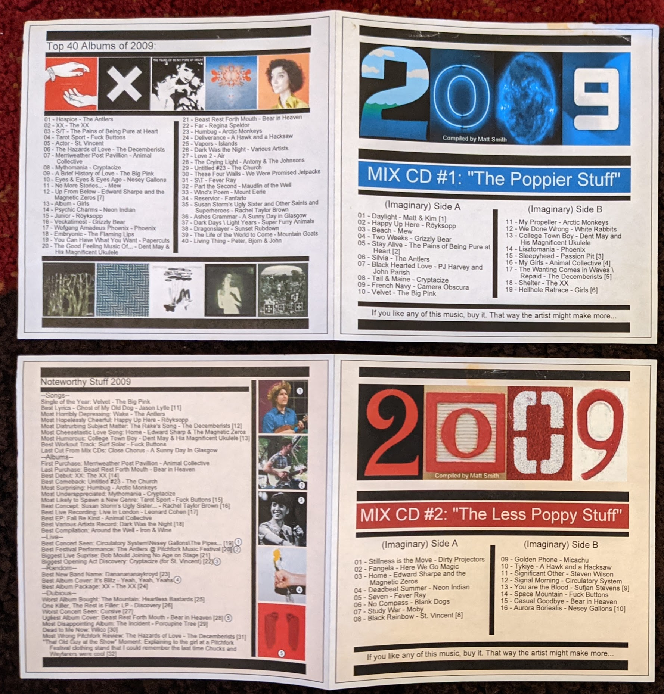{kind=link}
I sound so young for a 29 year old, but I think my connection to pop music at the time was making me feel young and I wanted to revel in it a bit. Admittedly, I would never feel this connected to pop music again. Despite these somewhat silly notes, I would actually get quite a few positive comments about the mix, and even received three mixes in response! None of them were as carefully curated and supplemented with footnotes, but it was nice to hear what other folks were into at the time. I feel like I could spend a remarkable amount of time analyzing how I feel now compared to what my impressions were at the time, but for now I am going to keep this to a simple comparison of my top albums then and now. Here are the albums that appear in my 2009 top 20 that I no longer consider to be among my favorites:
Mythomania by Cryptacise - (#7) I was really feeling high on this band after seeing them at Noise Pop 2009, but my interest really faded as I got away from that show. In general that early 60s pop revival stuff hasn’t aged great for me.
A Brief History of Love by The Big Pink - (#8) Two killer singles “Dominos” and especially “Velvet” made me greatly overate this at the time.
Eyes & Eyes & Eyes Ago by Nesey Gallons - (#9) I really was into Elephant 6 at the time, and wanted to like the latest artists in the collective, even if they weren’t up to spec.
Up From Below by Edward Sharpe and the Magnetic Zeros - (#12) I didn’t like their “dirt hipster” image when I saw them live, mostly because of my bad experiences with this demographic as as South Wedge resident. Listening to this record again with fresh ears, I probably need to give it another chance.
Wolfgang Amadeus Phoenix by Phoenix - (#17) I used to love these guys, but listening now I can’t understand why. Such generic dance indie.
Embryonic by The Flaming Lips - (#18) Totally fine, like most of their records. Doesn’t feel as interesting after others have done this kind of thing much better.
The Good Feeling Music of Dent May & His Magnificent Ukulele by Dent May - (#20) I was responding to the amazing pop songcraft here, despite the annoying ukulele packaging. With his later work, this is inessential. Wish he had made a new version of the brilliant “College Town Boy” though.
As for my numbers 21-40, that feels like me stretching to make a list, though I will comment on a couple that moved up to my favorites when they show up in my current list.
This was the year I attended my first two music festivals, where I discovered a ton of music. Also, in the fall I moved to Rochester, NY and had access to much more live music and four fantastic record stores. It was at one of these, Lakeshore Record Exchange, that I would buy many of the last CDs in my collection. This is the last year that CDs will appear in significant number in my photo of favorites. This was the most involved photo in this whole project to create. I put a record in there by accident that isn’t among my favorites, can you spot it? I’m certainly not going to go through the process of making it again!
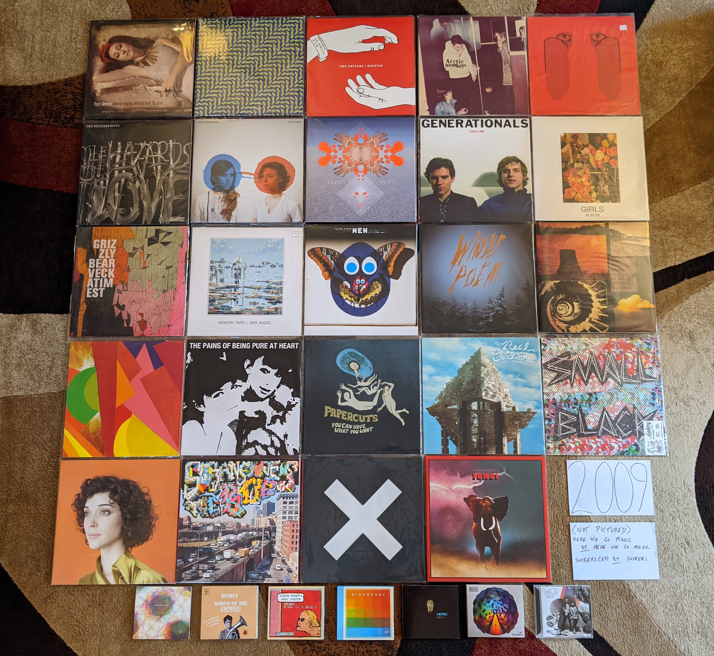{kind=link}
Ashes Grammar by A Sunny Day in Glasgow - While most of the bands were trying to conjure up the sprit of the 80s, these guys were making the kind of electronic, vaguely world music sounds that are straight out of the mid-90s. A strange little art rock record that it is really hard to compare to anything. It manages to be densely complex, and charmingly amateurish at the same time. [Memory: I discovered this while perusing the Pitchfork best of 2009 list. This really was the best era for that website actually promoting good music.]
Abnormally Attracted to Sin by Tori Amos - I wasn’t paying very close attention to Tori’s career when this came out, and didn’t really listen to it closely until almost a decade later. This is as wild record, where she seems to be trying out some of the popular music trends that had transpired during her 20-odd years in the industry. “Police Me” is particularly out there sound for Tori, and I’m not sure how to describe what it even is. 2007-2009 was the most experimental and diverse time in her career. it doesn’t all work, but it will never stop being interesting. [Memory: This was one of the very last CDs I ever purchased at a Best Buy.]
Merriweather Post Pavilion by Animal Collective - This is one of those records that was absolutely huge at the time, but you rarely hear about now. It still really holds up pretty well. Kind of a low-fi, electronic Pet Sounds, I rarely listen to it anymore, but always enjoy when I do. [Memory: This was one of the first albums I bought in 2009, and one of the first new releases I purchased on vinyl. I tried to buy it from Greg at City Lights, but he refused to switch back to vinyl. Probably why his store is no longer with us.]
Hospice by The Antlers - As my mix-notes indicate above, this was my album of the year at the time. That isn’t true anymore, but I still think this is a beautiful and haunted set of songs that I’m alway happy hear. However, the sullen mood and subject matter is something that I’m generally no seeking out. [Memory: I saw them play almost the entire album in sequence at Pitchfork Music Festival in 2009, and that powerful performance was one of the best I have ever seen]
Humbug by Arctic Monkeys - I had enjoyed their first two records, but for some reason this is where it started to really click for me. They are mining the goth sounds that I love here a bit. It is also the album where the pop song-craft really started to take form. “Crying Lightning” is a remarkable pop-rock song. [Memory: When I moved to rochester my record collection had started to grow significantly. I remember constructing new record crates to store them, sitting on the old green carpet in the entry hall of my tiny attic apartment.]
Best Rest Forth Mouth by Bear in Heaven - Ah, the era of the percussive electronic music. These guys were the best at it, and they didn’t even need a floor tom guy to make it work. It was refreshing to see bands that were working in a synthpop adjacent space, who had no interest in digging up the 80s. [Memory: The lead singer of this band had a great ironic mustache, which was the style of the time. Shortly their after, Movember, was developed as an excuse for men to grow mustaches again. I would grow a pretty sweet one of my own.]
March of the Zapotec/Holland by Beirut - This collection of two EPs, is highly successful in two very different genres. The first, is the typical world music, chamber pop this guy is generally making, but with a huge brass band. The second is delightful, early 90s techno. The combination works great together somehow. [Memory: These guys embody the 2000s more than anyone. I had to pick a performance by them from Pitchfork 2009 for the banner on this page.]
Susan Storm’s Ugly Sister and Other Saints and Superheroes by Rachel Taylor Brown - Such a cool concept for an album that is done mostly really well. Less famous (mostly imaginary, and quite troubled) comic book characters, and religious myths (The original superheroes). [Memory: I don’t know if this is true or not, but I remember this CD as the first thing I ever ordered online and had delivered to my new home of Rochester.]
The Hazards of Love by The Decemberists - This band had been heading down a road of fairy tales and prog rock that peaked with with release. Some great vocal contributions from Shara Nova of My Brightest Diamond. I wish it was a little shorter, and would probably come back to it more if it had been trimmed down a bit. [Memory: There was an amazing full performance video of this on YouTube back in the day, I really wish that was still available.]
Bitte Orca by Dirty Projectors - I don’t know that a band has ever done more with less technical proficiency (outside of punk music anyway). I don’t think this record is as intentionally arty as the reviews would have you believe. This is a band stretching their skills way beyond the advisable. So charmingly amateurish, and somehow it adds up to way more than its individual parts. Everyone in this band had a completely untrained voice, and it all works.[Memory: I was very resistent to this record at first given how rough around the edges it is, and how much Pitchfork was pushing it.]
The Duckworth Lewis Method by The Duckworth Lewis Method - A very late addition that I discovered more than a decade after release. Amazing in the way The Divine Comedy always is, but with a sense of whimsey that could only be produced by a concept album about the sport of cricket. I don’t understand all the references here, but the examination of Britain’s falling stature in the game, as an analogy for larger world issues is hard to miss. [Memory: I listened to this album more than any other in the year of 2021, and it even inspired me to research, and learn the rules and strategy of cricket so I could understand it better.]
Tarot Sport by Fuck Buttons - I think they tried to come up with a new genre name for this kind of thing, but looking back it just fits on the electronic branch of the post rock tree. Such positive high energy music, I used to put this on the end of running playlists to get me home from long runs. [Memory: This is the first new release that I really had to extend effort to get on vinyl. I imported a copy from Amazon UK.]
Con Law by Generationals - Remembering back to this era I think of two things: Chillwave, and this kind of straightforward, dance-able pop music. This first record has a rawness to it that would be sanded off in their later, more big-budget releases. They work better in this lower fidelity format. [Memory: One of the many great bands I saw play to a mostly empty room at Bugjar. Those who were there had a great time bopping around to these guys.]
Album by Girls - One of my favorite bands of all time, and I pretty much love everything they did in their short career. My favorite will always be this collection of stunning pop songs. “Hellhole Ratrace” is a remarkable story of refusing to give up, and learning to go it alone when there is no one else to lean on. [Memory: I’m so glad I was able to catch these guys at Pitchfork 2010, as they would break up not long after.]
Veckatimest by Grizzly Bear - This was my point of entry for this band. There first couple records didn’t connect with me, but there was something about the more tightly constructed songs on this album that made me appreciate their psych folk sound way more. I can’t think of a group with a more distinctive sound, and every record since this one has had a very similar feel, but I’m not anywhere close to being tired of it. [Memory: On one of my first extended business trips to Rochester, I remember brining along my newly purchased CD of this one. I remember for some reason I was assigned a full size pickup as my rental car. I also remember how amazing “Two Weeks” sounded the first time I heard it while pulling into the East Henrietta Country Inn and Suites.]
Here We Go Magic by Here We Go Magic - If you were to strip Grizzly Bear back to the bare essentials, you would have something like this record. The next album, by the full band version of this act would blow this away, but there is some real magic in songs like “Fangela”. [Memory: When I saw this band in 2010 I bought a shirt with the cover of this album on it. It had a hold in the sleeve, and I never wore it.]
Seek Magic by Memory Tapes - This guy always hated being lumped in with the Chillwave bands. I can kind of understand why, as this is built from mostly very different parts. That said, the highly melodic and psychedelic sounds on offer here invoke the same sort of painful nostalgia for a 1980s that never existed. “Plain Material” is one of my all time favorite songs, and it is hard to hear it without seeing a crowd of wayfarer wearing hipsters bopping around in Union Park, Chicago. [Memory: At Pitchfork 2009, this record was for sale at the same amazing booth that had the Minimal Wave compilations. I passed on it, and regretted it for almost a decade. I was eventually able to get a vinyl reissue of this one.]
Fantasies by Metric - The last great album by one of the great Canadian indie bands, in the year that the Canadian renaissance started to wrap up. I know they are still out there making music, but this is where it all starts sounding the same to me. [Memory: This is one of the very first CDs that I bought at Lakeshore Record Exchange, the alternative record store a two blocks walk from my new apartment in Rochester, NY.]
No More Stories… by Mew - [2009 FAVORITE] - Only Scandinavians can make this kind of music. So warm and comfy, such catchy pop songs. This isn’t chillwave, but it is making clear references to same imagined version of the 1980s. [Memory: I wish I knew how much I liked this band so I went to see them at Pitchfork 2009 on the B stage.]
Wind’s Poem by Mount Eerie - Such a heavy, beautiful record. I love how it hides all those melodies in that sea of noise. Needs to be listened to at high volume full the full impact. [Memory: I didn’t full appreciate this record until I listened to it on a night drive at high volume, from beginning to end. The way this should be experienced]
The Life of the World to Come by Mountain Goats - For some reason this record separates itself from the dozens of others from this guy. It is the same kind of self-produced indie folk/punk, but somehow by far my favorite. [Memory: I liked this record going in, but I loved this record after seeing a screening of a performance film of the whole record at Noise Pop 2010.]
The Resistance by Muse - I always heard Queen when I listened to these guys in a way that other folks did not seem to hear. Well after this album I think I wasn’t the only one. Very over the top, and an exceptional hard rock album. [Memory: I saw them on the tour for this record in Toronto with some work friends.]
Psychic Chasms by Neon Indian - This is probably the definitive Chillwave record and “Deadbeat Summer” the definitive song in the genre. It also illustrates how the low budget production values were an essential part of the formula. His later, more refined records just don’t hold up to this fuzzy, messy masterpiece. [Memory: I don’t know that any record makes me think of my tiny, dingy Park Avenue apartment than this one. I listened to this a lot back in those days.]
The Pains of Being Pure atHeart by The Pains of Being Pure at Heart - There was a massive “Pitchfork backlash” against this one since the site seemed to be way more into this than most. That said, they were absolutely right, and this kind pop/rock is timeless. I think everyone expected some kind of C86 revival, but this is really the only major artifact we got out of it. [Memory: At the Pitchfork music festival in 2009 I had just heard The Antlers play on the B stage and I was walking over to the main stages, and I heard these guys playing “Stay Alive”. I spontaneously starting twirling around in a circle as I walked. It was the last time I ever felt young.]
You Can Have What You Want by Papercuts - A fuzzy kind of psychedelic music that was compatible with, but not directly related to the prevailing trends of the time. A great album throughout, but “The Machine WIll Tell Us So” is one of my songs of the decade. This record almost fits better in 1999 than 2009 and it sounds timeless today. [Memory: I discovered this band opening for Camera Obscura at the German House in the Rochester South Wedge. I was nervous to walk through an unfamiliar neighborhood carrying my new copy of their LP. I now own a house in that very neighborhood.]
Real Estate by Real Estate - Making this list it is clear how this was the peak of fuzzy psychedelic music. These guys are making really pleasant jangly pop, with the fuzz dial turned up to 11. [Memory: I didn’t get into this band until I saw them at a Pitchfork after-show in 2011. I was there to see Dent May, but these guys were super impressive live.]
Junior by Röyksopp - It was tough to pick a favorite for this year, as I was split between the one I picked and this stellar record. Interestingly, I didn’t even put this on my list of favorite albums I made at the time! I was already into this band by 2009, and their ambient classic Melody AM was a favorite. This album was a shock, as they had transformed into some sort of Scandinavian Daft Punk. This is stunning electro-pop record, and I wish we had gotten more like it. [Memory: I held a vinyl copy of this in my hands once. I didn’t understand how great it was then. I greatly regret not buying it.]
Small Black EP by Small Black - Another of the cornerstones of Chillwave, this has a timeless sound that has aged really well. “Weird Machines” is probably my favorite track from the whole genre. These guys did survive the transition to more refined production values pretty well, but I still prefer the fuzzy, heavily clipped sound of this record. You can’t keep making this kind of music forever though. [Memory: I saw these guys at BugJar some random weeknight and remember being disappointed by how bro-ish these guys looked in their athleisure gear and ball caps.]
Actor by St. Vincent - A refinement of the sound from her first record, and by far my favorite release by the artist. Eccentric bedroom pop with a sharp rock edge, made without any notion of stardom or awareness of mass popularity. Things would change after this record, in ways I did not care for. [Memory: I saw her at Noise Pop 2009 (Great American Music Hall) right before this came out. It was an outstanding show, and how I will always prefer to remember the artist.]
Suckers EP by Suckers - I’m not exactly sure how to describe this genre, but it falls in the same space as bands like Yeasayer or Menomena. Highly percussive, with meandering instrumental passages, and serious music that isn’t afraid to be very fun. They didn’t last long, but what they made was great. [Memory: One of the last conversations I had with Greg at City Lights Records (State College, PA) was about this record. He knew I was very into MGMT and Menomena and he asked if I had heard the other band on the big summer tour (these guys). He spun his CD-R of the EP for me.]
The BQE by Sufjan Stevens - Mark this down as one of those records I like way more than almost anyone else. An amazing film soundtrack that borders on Contemporary Classical, and Sufjan pushing his middle period sound to its fullest extreme. This was also gave a preview of the electronic sounds that were to come. [Memory: I bought this (with a wad of other releases) at Lakeshore Record Exchange and listened to them repeatedly as I taught myself how to wax my cross-country skiis in the basement lab at my work.]
The XX by The XX - A minimalist rock record that was wildly popular at the time and that you hear little about today. My personal relationship has a similar arc to it. One of my very favorites at the time, but something I rarely find myself returning to today. Minimalism is tough. If what little is there doesn’t have a lot of depth to it, it gets old quick. That said, I have to include it, even if my time with it was brief but intense. [Memory: Hipster Runoff loved to make fun of this record. Carles always had a good understanding of what hype records were going to fade a bit over time.]
Spirit Animal by Zombi - It was strange to hear this kind of instrumental prog rock in the 21st century. It not only exists, but is excellent, especially the epic title track. [Memory: I discovered this album when it was played before a Dungen show at Mohawk Place in Buffalo, NY. I used the Shazaam music matching service to find it, and immediately downloaded from eMusic. I was pleasantly surprized to see these guys play a great opening set for Ghost half a decade later.]
Footnotes¶
Songs from Albums that Didn’t Make my Lists
This is the decade with the most albums, and by far the most favorite songs.
“Jessica” by Adam Green - I don’t know that anything summarizes the break between mainstream pop and the indie creatives than this satire of Jessica Simpson.
“Save Me” by Aimee Mann - I’ve still never seen “Magnolia” but I really like this song.
“Lisa” by Albert Hammond Jr - I feel like this guy is wasting away in The Strokes. What a genius pop song.
“Everyone Gets a Star” by Albert Hammond Jr - ditto, see above
“Flip!” by Apollo Sunshine - There was a time when it looked like Philly was going to become an indie stronghold. We got this song and a few others.
“Do the Whirlwind” by Architecture In Helsinki - Goofy childlike indie that I can’t take for an entire album, but this song is great.
“Again” by Archive - It is so strange how these guys had exactly one great song and it is a 16 minute art rock epic.
“I Bet You Look Good On The Dancefloor” by Arctic Monkeys - The single that started it all for one of the greatest bands of the last 20 years.
“Half Light” by Athlete - It is now trendy to call this kind of thing landfill indie, and I get it. There were some pretty good landfill indie songs though.
“Elephant Gun” by Beirut - Their best song appears on an otherwise unspectacular EP. Gorgeous stuff.
“The Model” by Belle and Sebastian - An amazing track off a generally mediocre record, with great shared vocals by Stuart and Stevie.
“Your Cover’s Blown” by Belle and Sebastian - Continuing the tradition of EP greatness, this is a look at the retro pop future for these guys.
“The Hole in Me - Remastered” by Blackfield - The only high point from the three album output of this Steven Wilson light touch side project.
“Red World” by Blank Dogs - I will always remember hearing this play at the gone but not forgotten Aquarius records in San Francisco, and walking out with a copy of the EP. The exact right kind of record to buy at that shop.
“No Compass” by Blank Dogs - A delightful deconstruction of the New Order sound.
“First Day of My Life” by Bright Eyes - At this point, he co-uldn’t make a great album anymore, but there were always great songs.
“Gold Mine Gutted” by Bright Eyes - see above
“Anthems for a Seventeen Year Old Girl” by Broken Social Scene - An extremely simple vocoder heavy vocal melody over a dense interesting instrumental background.
“Liar” by Built To Spill - The later albums end up sounds more than a little like Death Cab of Cutie in a good way.
“It Dawned on Me” by Calla - The kings of one great song per album, this was the first one I heard.
“Fear Of Fireflies” by Calla - Why is the good song always the first one?
“Tarantula” by Calla - Such a wonderful mysterious instrumental to start with, unfortunately they couldn’t maintain this level.
“The Greatest” by Cat Power - It is strange to see someone I used to love represented by only one song.
“Signal Morning” by Circulatory System - I was so excited for a new album from these guys, but it only produced one great track.
“I Believe” by “Conjure One, Rhys Fulber” - A very unexpected cover, and it is weird to hear the king of ambient industrial and world music fusion sing.
“Pour Le Monde” by Crowded House - The best song you will ever hear play the background at CVS.
“Tail & Mane” by Cryptacize - I saw them open for St. Vincent at Noise pop 2009 and the positive experience made me get very into them for a while. I’m left only with a lasting interest in this song.
“Alice Practice” by Crystal Castles - So abrasive. I hated it at first, but wow did it grow on me.
“”Harder, Better, Faster, Stronger”” by Daft Punk - I discoverd these guys from an Apple commercial and this song. Still really like this track, but I’ve never seen the record as the classic it is popularly thought to be.
“Strange Overtones” by David Byrne - It was jarring for this duo who previously made wildly experimental music, to make such a stunning pop song. Those Eno backing vocals really complete the song.
“College Town Boy” by Dent May - I can’t abide this phase of his career anymore, but this is very funny enjoyable track. He should make a new version.
“Precious” by Depeche Mode - Around this time I tended to assume they were going to be over the hill, but they kept making great tracks that sounded surprisingly modern.
“White Flag” by Dido - I felt a bit silly at the time (less so now) about how much I like this syrupy adult contemporary track.
“Brand New Day” by Dizzee Rascal - One of the more off genre things that Sirius Left of Center played was UK Hip Hop. This is a classic of that scene.
“My Old Ways” by Dr. Dog - Another group I’m bored with at this point, but I still really like this one track.
“Home” by Edward Sharpe & The Magnetic Zeros - Not as charming as it once was, but still a fun little pop song.
“It’s A Motherfucker” by Eels - I’m a huge fan of this guys lyrics and voice, and both are on display here.
“1234” by Feist - Was that Ipod Video commercial when indie broke into the mainstream?
“My Moon My Man” by Feist - A terrific little jazzy pop song on an album that I otherwise mostly find boring.
“Emerge” by Fischerspooner - Was there ever another artist in the genre of electroclash?
“Mykonos” by Fleet Foxes - They are so overrated in my opinion, but each album has had one great song.
“He Doesn’t Know Why” by Fleet Foxes - …and this is the best of them all.
“Play the Hits” by Hal - The only other band that was doing anything like the delightful little pop of The Thrills.
“Cinders” by Holopaw - A latter day slowcore act spices things up with a little brass.
“Losing Light” by Holopaw - Really nice mellow mood on this one.
“Boy From School” by Hot Chip - I much prefer their later work, but this is my favorite from the early records.
“Bandages” by Hot Hot Heat - I’ve liked this song since 2003 and I’m not sure I have ever heard the album.
“Nice to Know You” by Incubus - An early indie band that made it big with this one.
“Pioneer To The Falls” by Interpol - Their best song on an otherwise unremarkable record.
“Such Great Heights” by Iron & Wine - A song so good, it was an indie hit twice in two years.
“Ruby” by Kaiser Chiefs - After their first record, these guys went very pop. It worked really well at times, like here.
“Like It Too Much” by Kaiser Chiefs - My favorite of their later poppier records. Such a fun, interesting track.
“A.D.I.D.A.S. (feat. Big Boi)” by “Killer Mike, Big Boi” - The best song from the electro-funk era of southern rap.
“I’d Rather Dance With You” by Kings of Convenience - I don’t know that I would need to read the bio to know these guys are Scandinavian.
“Stutter” by Lake Trout - This band has so much potential, and their jazz influenced alt rock does a great job staying out of jam band territory.
“Angelica” by Lamb - Yes I know this is mostly “Clair De Lune”, but they do such a great job making it into a cool trip hop song.
“Ain’t Never Been Cool” by Lucky Soul - For a second it seemed like there was going to be an indie-pop revival of the early 60s sound, but this is one of the few interesting things to come out of it.
“Sneffels Yokul” by Make A Rising - Every now and then NPR Music highlights something obscure and fascinating, and this is one of those.
“Like U Crazy” by Mates of State - I saw these guys open for Death Cab for Cutie and came home with this, there most recent release. This goofy over the top love song is the only thing I still connect with from this silly husband/wife pop act.
“Daylight” by Matt and Kim - This song was everywhere in 2009 and for good reason, it is a pop gem that combines an amazing piano hook with really interesting hip hop inspired drumming.
“Golden Phone” by Micachu & The Shapes - This band was going to be the next big thing, but they really only left us with this great little eccentric pop song.
“Study War” by Moby - A cool little latter day song by this guy, but at this point he was mostly mining his own past.
“Dancefloors” by My Morning Jacket - A great little country rocker off a nearly great album.
“Star Witness” by Neko Case - A great little dark country song that feels made for the NPR airwaves.
“Aurora Borealis” by Nesey Gallons - An obscure Elephant6 gem from the height of my interest in the collective.
“Right Where It Belongs” by Nine Inch Nails - I have never been able to get into their work after the 1990s, but this is the best of their later day songs. Perhaps because it sounds the most like something off of the 90s records.
“Teen Creeps” by No Age - I’ll never forget seeing them play this song at Bottom of the Hill in San Francisco at noise pop 2009.
“I Was Never Young” by of Montreal - How I discovered them, when this was used in a TV commercial.
“Breakfast in NYC” by Oppenheimer - Somehow these guys were super popular in State College, PA for a short period. This is a great little electronic indie-pop song.
“Illuminate” by Orbital - The first CD I got from these guys was an early 2000s compilation (found at a CD and Tape exchange in Cleveland) and a gravitated to this fairly straightforward pop song that doesn’t really fit into the rest of their catalog. This really seems to anticipate the sound that Daft Punk was about to make big.
“The Whole World (feat. Killer Mike)” by “Outkast, Killer Mike” - I didn’t really take hip hop seriously and thought of it mostly as party music until I heard this amazing track.
“This Is The Dream Of Win & Regine” by Owen Pallett - A terrific track of of his first record that gives indications of the brilliance to come.
“Sleepyhead” by Passion Pit - What in the hell happened to the Pashy Pit? This song was so huge and they quickly disappeared.
“Big Black Coffin” by Peter Bjorn and John - I love these stunning little sad pop songs these guys can make.
“Nothing To Worry About” by Peter Bjorn and John - This albums was as weird departure and it really works on this one track.
“Everything Is Everything” by Phoenix - They were more of a singles band for me and it felt like each album had one track that rose above the sameness of the other material.
“Lisztomania” by Phoenix - See above
“Bye Bye Bye” by Plants and Animals - Another time that NPR music highlighted a great track that would have otherwise not found an audience. This kind of indie folk was going out of style, but felt fresh here.
“Hey Pretty” by Poe - An artist that I feel was never able to reach their full potential. A really cool rock song with electronic accents, and outstanding vocals. Not quite trip hop, but it fits in well with the sounds of the early 2000s.
“Drawing the Line” by Porcupine Tree - The one great song off of their last album before hiatus. Much more of a straight ahead rock song than what these guys typically make.
“Golden Touch - Full Length” by Razorlight - Might be “Landfill Indie” but it is good “Landfill Indie”.
“Lights Out” by Santigold - Such a great little power-pop gem.
“Tear You Apart” by She Wants Revenge - Sirius was hyping the crap out of these guys, but this is really there only good song.
“BlindBlindBlind” by Silver Mt. Zion - Bad singing has never sounded so good before or after.
“Two Way Monologue” by Sondre Lerche - I was really into this guy back then, but this is about all I care to listen to these days.
“Four to the Floor” by Starsailor - These guys take a break from generic slow rock to let Phil Spector make one last classic.
“You Are The Blood” by Sufjan Stevens - A wild 10 minute epic that is peak weird Sufjan.
“Punkrocker - feat. Iggy Pop” by Teddybears - A really cool Krautrock style song from a band that achieved nothing else.
“A Minha Menina” by The Bees - A great cover that is almost to similar to the original, but still does enough new.
“Go Karts” by The Bees - Their only weakness is how derivative everything seems. This Sgt. Pepper era Beatles homage works pretty well.
“Velvet” by The Big Pink - Amazing song from a very mediocre album. The shoegazzey bridge in the middle is spectacular.
“Cobalt Blue” by The Church - This was a very good latter day record, and this was an especially great track from it. Are they trying to make an Echo and the Bunnymen song?
“Pass It On” by The Coral - Much like The Bees, their only weakness is their inability to separate themselves from their influences, but this is pretty great.
“Dreaming of You” by The Coral - see above.
“I Believe in a Thing Called Love” by The Darkness - You couldn’t escape this song in 2004, but who would want to avoid this trashy rock fun.
“No Cities Left” by The Dears - I generally have little interest in their early music other than this interesting song with a big sound that fits in well with their best work to come.
“”The Gymnast, High Above the Ground”” by The Decemberists - Each of the first two records has a great song.
“California One / Youth and Beauty Brigade” by The Decemberists - See above
“Modern Moonlight” by The Dresden Dolls - The drumming in this song is some of the best punk small kit work I have ever seen or heard.
“Don’t Know Why (You Stay)” by The Essex Green - An obscure latter day E6 pop gem.
“Agenda Suicide” by The Faint - So stupid, but so enjoyable.
“The W.A.N.D.” by The Flaming Lips - The first song I ever liked by these guys, and probably still my favorite.
“Dynamo” by The Golden Dogs - I don’t know that another band has ever really sounded so much like Paul McCarney and Wings as these guys do here.
“Who’s Got The Crack” by The Moldy Peaches - A completely ridiculous joke of a song that totally works.
“Girls” by The Prodigy - Some really interesting latter day techno that pulls in elements of the bass heavy electronic music of the day.
“Phantom Limb” by The Shins - The one amazing track from the weak third album.
“Dry Your Eyes” by The Streets - I do still like this jokey concept record though I rarely find myself returning to it, with the exception of this earnestly sincere closing track.
“Seven Nation Army” by The White Stripes - Being played at every sporting event of the last 20 years has somehow not ruined this one.
“Fell In Love With a Girl” by The White Stripes - Legos.
“Experimental Film” by They Might Be Giants - Weirdly this latter day track was the song that got these guys on my radar.
“Sweet the Sting” by Tori Amos - A terrific song off a horrible record.
“Flowers In The Window” by Travis - Why did I like these guys so much? Well this song is pretty good.
“Staring at the Sun” by TV On The Radio - I never liked these guys as much as everyone else, but their first album had some pretty good tracks.
“Ambulance” by TV On The Radio - …and this a capella track was best of all.
“Oxford Comma” by Vampire Weekend - A clever little pop song from a band that would rapidly outlast their welcome.
“Maps” by Yeah Yeah Yeahs - A very hot and cold band, but their high points are very high, like this stellar post-punk ballad.
“Heads Will Roll” by Yeah Yeah Yeahs - One of the first shots fired in the 80s revival, when the punk kids discovered keyboards and drum machines for the second time.
Exploring the Past
When the decade started, I was still mostly looking into the music of the past. As the years went on I continued to explore decades gone by, but simultaneous to many artists and albums of the current age. In many cases there was a lot of crossover between the two threads.
Genesis/Prog - For most of my young life the early Genesis was as mysterious thing. I had often heard whispers of a very different band led by Peter Gabriel that was far more experimental than the 80s version I knew well. In the late 90s my brother had acquired a compilation of the band that included a couple songs from this era, and I was intrigued by the version of “The Carpet Crawlers” that closed out that record. In 2022 I would finally take the plunge and buy The Lamb Lies Down on Broadway knowing only “Crawlers” and the title song. It would open the door to one of my favorite bands. With the aid of Columbia House, I would go from zero to almost the entire catalog within a matter of months. Fourteen of these records make my list of all-time favorites, third most among all artists. In the early 2000s I kept my latest purchases in one of those leather bound CD wallets. I remember leafing through the book and showing my girlfriend what I was listening to, and her making fun of me mercilessly for all the Genesis records. Progressive rock will never be cool, but Genesis was my point of entry into the genre of Rush, Yes, King Crimson and many of my other favorite bands. It also was the purview of one of my favorite artists of the time Porcupine Tree / Steven Wilson.
UK Artists/The Kinks/The Jam/Blur - It was a common thing for 90s teenagers to be Anglophiles, obsessed with UK music and culture. Much of this was centered around 60s bands like The Beatles. I was very much of this disposition and the interest continued and grew in my 20s. Early in the decade I had heard a sampling of Kinks tracks from the early “All Day, and All of the Night” (in a TV commercial) to “Lola” (a staple of classic rock radio) and I wanted to hear more. I remember an extensive search to find a comprehensive compilation that finally resulted in a two disc import collection that I found at the State College Circuit City around 2002. That disc provided me more enjoyment that I ever could have imagined and would be highly influential in my tastes going forward. A couple years later I heard the Jam track “Thats Entertainment” when streaming UK Virgin radio in my grad student office. I was intrigued that there was another band that like The Kinks were much more popular in the UK and had a mysterious catalog that I needed to know more about. Almost simultaneously, I had acquired a greatest hits compilation for the more contemporary band Blur, who also seemed defined by their “Britishness”. This trilogy of “very English bands” would become central in my listening interests through the decade, and throughout my life since. These classic UK bands were obviously highly influential on the UK indie acts of the early 2000s like Franz Ferdinand and the Kaiser Chiefs.
XTC - I was tempted to lump these guys into the very UK bands above, but it didn’t feel quite right. They have always been a cult band on both sides of the Atlantic. I heard the song “Dear God” on Sirius First Wave (a channel that plays classic 80s alternative) in the summer of 2004, after which I sought out Skylarking. After getting my first real job, I quickly bought the entire catalog that was available at that time. Late in the decade, they would reissue the difficult to find “Apple Venus” records. I don’t know that any band exemplifies the kind of intricate pop music that I love. All twelve of their studio albums make my list of favorites, and there is no other artist I can say anything like that about. I also think they were one of the primary influences on the indie-pop movement that was a major part of my early 2000s listening habits.
Eno/Roxy Music - When I was a kid, I had the Microsoft Encarta digital encyclopedia on CD ROM, and it provided the kind of information that I would soon be seeking out on the internet but in a kind of larval form. I remember reading the article for David Bowie many times. Even before he was my favorite artist, the way the article described the artist intrigued me, and after I started exploring his music, it gave me ideas on where to go next. In addition to hearing about things like “the thin white duke” and the “Glass Spider Tour” the article called out several artists that were contemporaries of or inspired by Bowie, and in that list was Roxy music and the two Brians, Ferry and Eno. In 2004 I would finally hear Roxy Music on Sirius First Wave. This led me to their classic record Country Life which I picked up used at a CD & Tape exchange in Cleveland, OH. Interestingly, I have been slowly exploring the Roxy Music catalog up to the day that I write this. I finally purchased a vinyl copy of the last remaining studio LP Manifesto in September of 2022. Six of their records are now in my top favorites. Brian Eno was something I sought out purely on the reputation of his early records, and my fuzzy memories of that Encarta article. When I started to explore his music in 2005, he was in the midst of a major CD reissue program, and I bought the whole lot. His four initial pop records, and one of his early ambient works make my list.
Live Aid/Ultravox/Style Council - Also in 2004 (this was obviously a year when I really started to research the musical past) I purchased a newly released DVD box set of the 1985 Live Aid concerts. Those performances had always been a bit mysterious to me as they were seldom shown on TV (outside of the famous Queen set) and I also had the unique situation of having been right next to the Philadelphia event while it was going on. On that famous day in July 1985 I was with my family at a religious convention in the next stadium over. I was only five, but my older brothers definitely wanted to be over in JFK stadium for the show instead of sweating their butts off in a suit listening to religious propaganda. The DVDs reconnected me with a lot of pop music of that day that I had forgotten about (Paul Young, Nik Kershaw), gave me a greater appreciation of acts I had never given proper attention (Madonna, Judas Priest, Hall and Oates), and helped me discover a few new favorites. I had never heard of Ultravox until I watched those DVDs for the first time, but immediately after listening, I sought out a collection of their Midge Ure era records. I’m still mystified why this wonderful and influential new wave act has never gotten any mainstream attention in the US. I have to admit that the first time I watched the UK portion of the Live Aid show, I thought that The Style Council were mostly hilarious. I had a hard time taking them too seriously with their aggressively 80s style and blued eyed soul music. After I learned to enjoy the last record by Paul Weller’s first band The Jam I started to understand what the Style were about, and had a new found appreciation. In the last years of the decade I even sought out their most famous records. Greg at City Lights records always told me he would make me a great deal on the comprehensive box set he had kept in stock a decade plus past its cultural relevance. I never took him up on his offer, but I did go back and buy it at Chronic Town in State College where he was selling some of his remaining stock by consignment. I like these guys enough now that I have re-bought their entire catalog (minus the crap last record) on vinyl. I had a strange holiday tradition where I watched the Live Aid DVDs every Christmas season from 2004 until 2020, and I pretty much have the concert memorized at this point.
Post-Rock - On a couple occasions I bought records purely because they seemed so disproportionately loved on RateYourMusic, and such was the case with Spirit of Eden by Talk Talk. This 2006 purchase led me into the now much maligned genre of Post Rock, which at the time was still one of the most active and loved genres of the day. This was also the exact time when I started to use eMusic to download indie label MP3s. Post Rock was a good choice of genre for this service since most of the artists were on indie labels and the abundance of long tracks made the pay per download model a great value. In addition to buying the popular works in the genre from the 2000s, I dug back into the 90s originals like Mogwai, Bark Psychosis, and Slint. This would lead me to my favorite album of all time: Spiderland.
Elephant 6 - Another thing I was very interested in around 2006 was this Athens GA based collective. They were also a great target for eMusic purchase and I was able to get roughly half the important releases that way. The others were hunted down as cheap used CD purchases on Amazon. This exploration was highly coupled with my interest in the E6 related bands that were still very active in the 2000s like Of Montreal and The Apples In Stereo. I had the opportunity to see two E6 related shows in the last year of the decade: a performance by Circulatory System at SUNY Geneseo and the entire cast of principles playing an ensemble holiday show at Soundlab in Buffalo.
Red House Painters - In the early years of the decade I would use the AllMusicGuide to do genre studies and download the top tracks using the “MP3 services of the era”. Later, my eMusic subscription gave me a legit way to check out the whole albums in the middle years of the decade. That is how it was with Mark Kozelek’s first project Red House Painters. The AllMusicGuide pointed me to slowcore, and I found a scattershot collection of tunes on the sharing services of the day, but never really did a deep dive on the records until around 2006. This would yield three of my favorite albums of all time.
Frank Zappa/Jazz Fusion - Weirdly, the last major artist of the past that eMusic connected me to was Frank Zappa. I had been hearing his stuff on Sirius The Vault for some time, and multiple friends had tried to get me into him over the years. Emusic has a single compilation called Strictly Commercial which gave me a taste of his career. It focused mostly on the jokey pop songs, which have never really been my thing, but there were a few things I really liked. I especially enjoyed the jazzy stuff like “Peaches En Regalia”. This would kick off both a study of Zappa and jazz fusion artists like: Return to Forever, The Mahavishnu Orchestra and Weather Report. The XM radio channel “Beyond Jazz” would then connect me with more classic jazz fusion and the contemporary fusion artists of the early to mid 2000s.
Goth/Dark Punk & New Wave/Wire - If there was a single theme that ran through the decade for me, it was 80s goth and the various goth adjacent forms of music. Joy Division was a name I kept hearing as I explored the music of the past. I think it was when someone accused one of my recent favorites Interpol from copying them (not true by the way) that I finally looked into Unknown Pleasures. Around the same time (c. 2002) I was getting very into the early Cure. Then led by their quieter more ambient project Delerium I started to listen to industrial electro-goth favorites Front Line Assembly. There was one band in particular from the 80s goth scene that would pull me into the genre. Around 2003 they released one of my favorite 80s shows, “Miami Vice” on DVD. There is an episode that features a mostly instrumental version of the Damned song “In Dulce Decorum” which reminded me of how much I loved that song on the Miami Vice II Soundtrack Album. I downloaded the original version from iTunes, and it was a great point of entry to the world of 80s goth. I would gradually build a collection of all the Damned records and other leading acts in the genre like Bauhaus, Christian Death, and Echo and the Bunnymen. My earlier interest in Joy Division would lead me to the 4AD label a different kind of dark music that was more subdued and melodic with bands like Cocteau Twins, This Mortal Coil, and especially the fantastic Dead Can Dance. Around 2007, I bought the Rhino collection A Life Less Lived: The Gothic Box and I became fully immersed in the genre. Shortly after, when I started to collect vinyl records, goth would be a cornerstone of my collection, and I would buy the most famous records by acts like Sisters of Mercy, The Mission, and The Cult on reputation alone. Towards the end of the decade I would explore the much celebrated, first three records of the band Wire. While all three are based in dark minimalist punk and new wave, their third, 154 might be the finest goth record ever made.
Other Important Threads
There were other ways that I was hearing music in the 2000s and there was music outside of the range that I feel like I can include in the main list here for some reason.
Party Hip Hop / Rap - In the year 2000, I moved to State College PA to attend Penn State Main Campus. Like most students, I went to parties. The party music of the day was the latest hip-hop and rap hits. I especially remember hearing “Party Up” by DMX, “Big Pimpin’” by Jay-Z, and “Still D.R.E.” by Dr. Dre. As someone who was raised in a fairly conservative religious movement in white middle America, I was getting exposed to a whole new scene through these parties and the music that was featured. It led me to tune into MTV for the first time in half a decade where I found out about artists like Ludicris (“Rollout”), Missy Elliot (“Gossip Folks”), and Outkast (many songs, but initially Mrs. Jackson, and Killer Mike (“A.D.I.D.A.S.”). I did stay in contact with this music, mostly at parties in my student days, but generally speaking it hasn’t followed me into adult life. This music doesn’t make much sense to me outside of the context I discovered it. I do have a playlist I put on every now and then when I want to feel young.
Classical Music - Around the turn of the millennium, my favorite store to hang out in was Borders Books, Movies and Music. There was a location very close to the Penn State satellite campus I was attending, and I spent a lot of time there, particularly in the music section. That location was almost always playing what I now know to be baroque music, particularly J.S. Bach. The staff were happy to direct me to a 2 disc compilation of his work that would become the first entry into my classical music collection. Shortly after I found a discount box set collection of classical piano favorites at best buy on deep discount. The recordings are awful, and I would never listen to this box now, but it led me to several pieces that would become lifetime favorites particularly “Piano Concerto No. 2” by Sergei Rachmaninoff. My friends who were in music school at the time tried to talk me out of it because Rachmaninoff will never be cool, but I didn’t care then and I don’t care now. Around 2001 I heard a MIDI file play in a 3D virtual space in the larval metaverse app called “Active Worlds”. It was a striking piece of music that I discovered to be the slow movement from Beethoven’s “Second Symphony”. That remarkable discovery led to buy a large, expensive box set of all nine of his symphonies. At this point I was hooked. On my first trip to London in early 2007 I was able to see a live orchestra for the first time. I went to a concert in their main series that featured the works of Janacek and Brahms. I would discover two of my favorites at this concert. Leos Janacek is my favorite composer, and the piece I heard that evening “Taras Bulba” is one of my absolute favorites. This would be the first time I heard Brahms “Violin Concerto”, but I liked it so much I would attend a concert less than a year later to hear the Colorado symphony perform it as well. Around this same time I saw the movie “2001: A Space Odyssey” for the first time as an adult. It was a frequent part of the HDNet Movies programming, and it was a striking film to see and hear in the new higher resolution. I particularly connected with the music of Gyorgy Ligeti which would be my entry into the very modern sounds of the mid-20th century. I arrived in Rochester, NY a big fan of classical music, and ready to consume all that town and its conservatory had to offer.
Game Music - The late 90s, and early 2000s was the dawn of the “video games as art” movement. One area where innovation and sophistication was being felt strongly was the music in the games. The first game where I really noticed the music was Final Fantasy VIII. In many ways this game is mostly remembered for its score by Nobuo Uematsu today. I was so struck by it, the first thing I ever bought off of ebay back in 2001 was a black market Hong Kong produced four CD set of the score. The scores would become more symphonic in the PS2 era and the melodramatic, anime style music for Final Fantasy X (again by Uematsu) and Xenosaga (by Yasunori Mitsuda) were high points. In many ways the track “Zanarkand” from FFX is the high point for the genre of game music in general. By the end of the decade orchestral tours would travel internationally to play this material in front of packed houses. Simultaneously to this, there was a growing appreciation for the music of the 16-bit era of the early to mid 90s. While the tools artists had available to them was limited there was a lot to like about the core melodies and themes of these now ancient scores. Remix sites were created (most noteworthy “OCRemix” still exists today) where the music of that era were expanded upon and developed in a variety of styles. It was there that the raw scores from classics like F-Zero, Megaman X, and Castlevania reached their full potential. Of particular note for me is the classic “Filmore” theme (“Filmoa” in the Japanese version), and the fact that remixes are still being made of this funky track show how much good there is in the 16-bit original. The ultimate statement from this time is probably still Final Fantasy VI and the key tracks from that score, including the opera (?) that somehow was pulled off convincingly on SNES hardware are still impressive today. The 90s and 2000s were the golden age of game music, and I was a big fan in my early 20s.